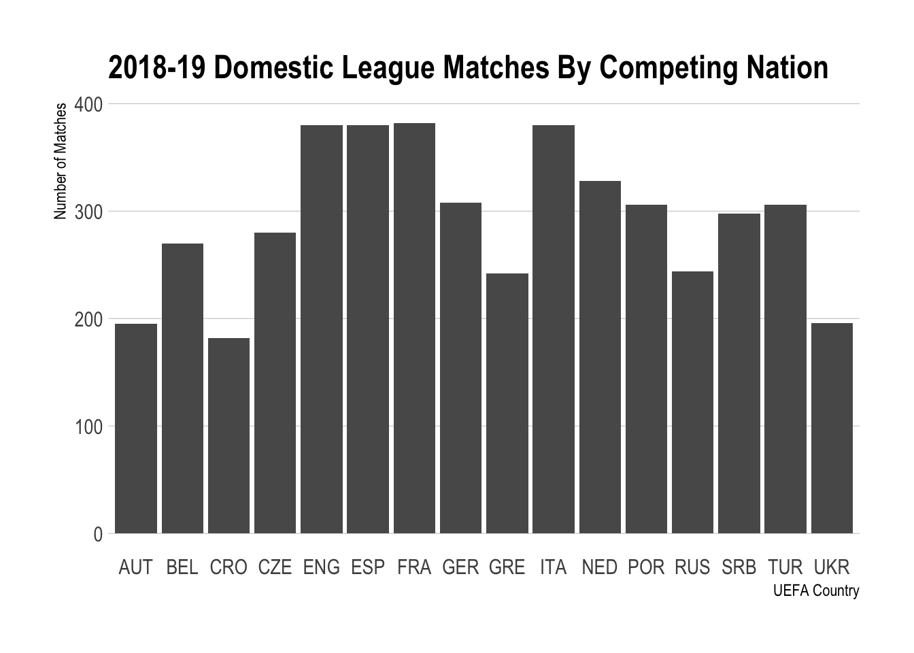
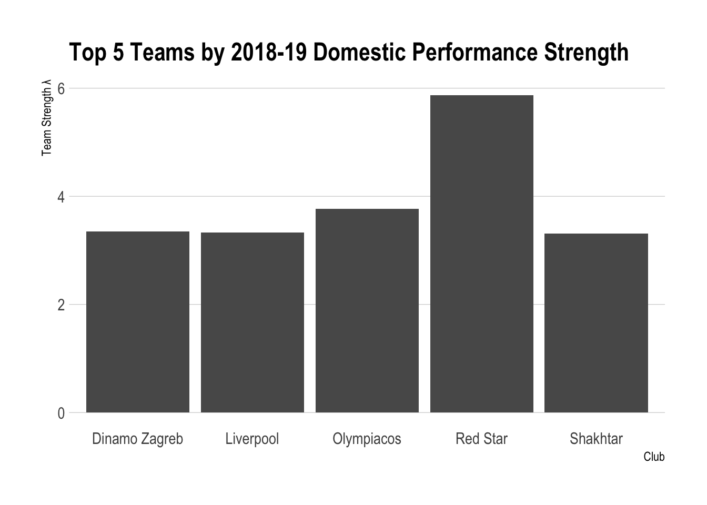
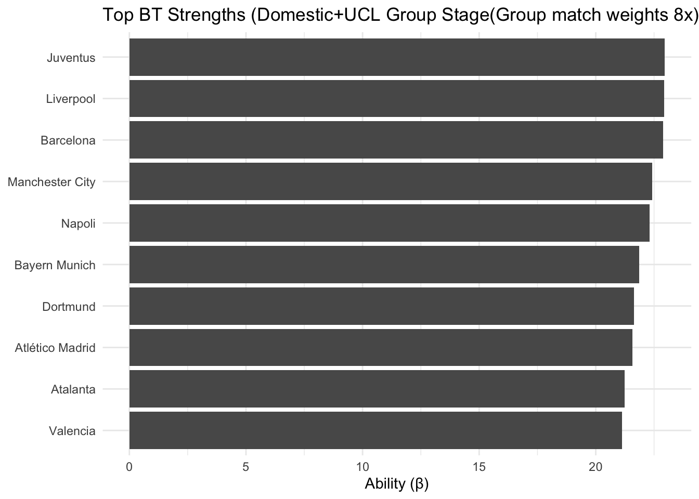
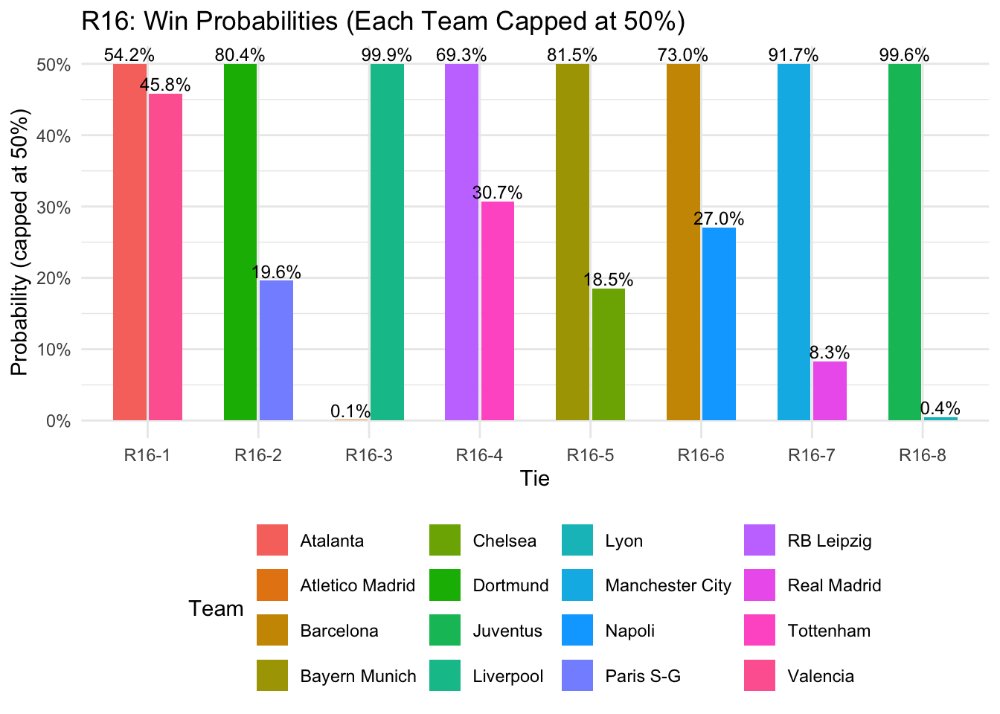
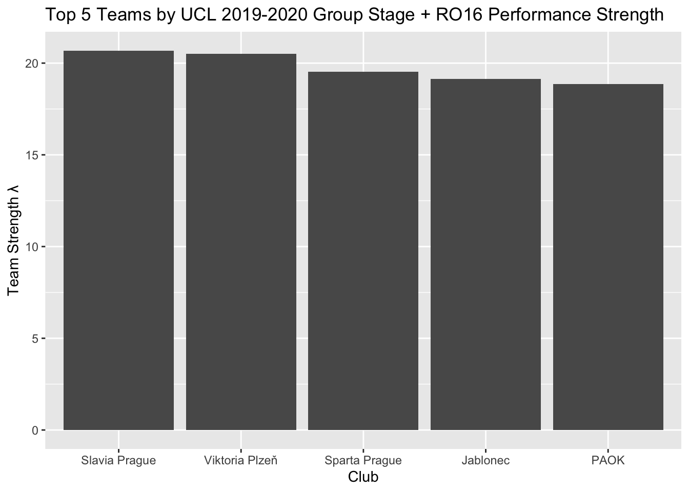
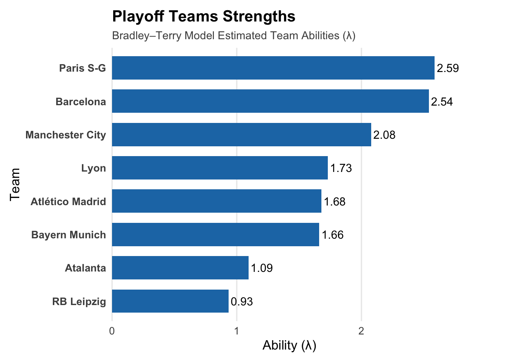
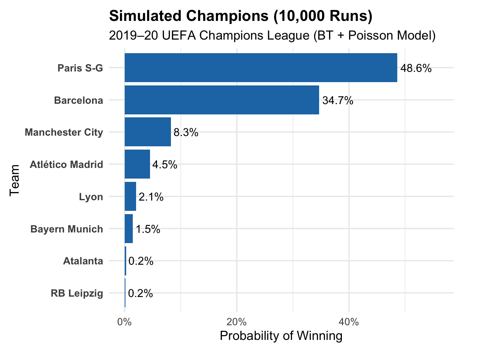
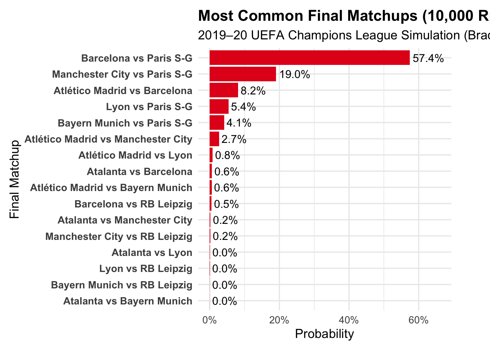

# A tibble: 10 × 18
Competition_Name Gender Country Season_End_Year Round Wk Day Date
<chr> <chr> <chr> <dbl> <chr> <dbl> <chr> <date>
1 Süper Lig M TUR 2019 <NA> 28 Sun 2019-04-14
2 La Liga M ESP 2019 <NA> 22 Sun 2019-02-03
3 Ligue 1 M FRA 2019 Ligu… 35 Fri 2019-05-03
4 La Liga M ESP 2019 <NA> 1 Sat 2018-08-18
5 Serbian SuperLiga M SRB 2019 Regu… 13 Sun 2018-10-28
6 Eredivisie M NED 2019 Ered… 6 Sat 2018-09-22
7 La Liga M ESP 2019 <NA> 36 Sat 2019-05-04
8 Primeira Liga M POR 2019 <NA> 28 Sun 2019-04-07
9 Serie A M ITA 2019 <NA> 27 Sun 2019-03-10
10 Ukrainian Premie… M UKR 2019 Regu… 16 Sun 2018-11-25
# ℹ 10 more variables: Time <time>, Home <chr>, HomeGoals <dbl>, Away <chr>,
# AwayGoals <dbl>, Attendance <dbl>, Venue <chr>, Referee <chr>, Notes <chr>,
# MatchURL <chr>2019-2020 UEFA Champions League Simulation
Executive Summary
Like many sports competitions and organizations around the globe in early 2020, UEFA, the governing body of soccer in Europe, decided to postpone the knockout stages of the historic and immensely popular Champions League (UCL) tournament due to the COVID-19 pandemic. When the tournament finally resumed, it did so in a modified format: UEFA elected to change the typical competition format from a two game, home-and-away series in the quarterfinal and semifinal rounds, to a single elimination format. Further, games only took place at a neutral site for both teams, with all of the remaining games being played in Porto, Portugal. After all of the changes and with the pandemic still affecting society at large, the German powerhouse of Bayern Munich won the 2019-2020 Champions League tournament, besting a Paris Saint-Germain (Paris S-G or PSG) team with superstars like Angel Di Maria, Neymar, and Kylian Mbappe 1-01.
Therefore, this iteration of the Champions League presents an interesting challenge in itself: do the results of the 2019-20 Champions League align with the expectations of the tournament, should it have been played in its traditional two-leg format? Thus, throughout our project, we sought to simulate the tournament from the quarterfinals through the final with its typical format and analyze the results to see who won and what differed from the actual tournament’s match-ups and winners.
Our models used the ideas of domestic strength and home-field advantage to inform team strengths for participants in the UCL. Domestic strength was defined as a team’s performance relative to their domestic components, while home-field advantage was the associated “boost” to a UCL team in the group stages of the tournament when they played on their home pitch,
Instead of beginning our project at the quarterfinal stage, we wanted to simulate a round that wasn’t impacted by the COVID-19 pandemic. Thus, we started our project with simulating the round of 16, where we simulated the goals scored for each team, which we could then use to determine a winner and a probability that a given team advanced. These initial results saw strong deviations from the actual results, with teams like Juventus being predicted to have a 99% chance of advancing, while they lost to Lyon in real life.
After this initial case study, we pivoted to simulating only the quarterfinals through the final round. In these simulations, which were based on three different underlying models, we saw some comparable and some divergent results. Primarily, between the three models, we saw PSG favored to win the tournament, instead of the actual winners, Bayern Munich. However, our models suggested different final and semifinal match-ups, with one suggesting Spanish-side FC Barcelona would play PSG in the final, while another accurately projected the semifinal and final match-up confidently. With that said, from our results, we can draw that in an alternative path where UEFA did not modify the Champions League format, PSG, the actual runner-ups in the 2019-20 tournament, would’ve been the favorites.
Data Overview
The following data was gathered using the worldfootballR library to scrape 2019-20 UEFA Champions League group stage and knockout game results and the 2018-19 domestic league results for the 32 competing teams across 16 individual league competitions2 from fbref.com.
Data Pre-processing
In order to use the domestic competition and UEFA Champions League matchup data scraped from fbref.com3 with the Bradley-Terry package, BradleyTerry2, the raw data must first be cleaned, parsed, and reformated into the package’s expected format. This code follows that found in Lecture 12, particularly when refactoring home and away win data into a trainable DataFrame.
With the leagues all concatenated together, we can check to see the distribution of the complete DataFrame’s members.

# A tibble: 10 × 4
home.team away.team home.win away.win
<fct> <fct> <dbl> <dbl>
1 Leverkusen Bayern Munich 1 0
2 PSV Eindhoven Vitesse 1 0
3 Real Sociedad Villarreal 0 1
4 Partizan Mladost Lučani 1 0
5 Nice Dijon 0 1
6 Austria Wien RB Salzburg 0 2
7 Benfica Feirense 1 0
8 Real Madrid Valladolid 1 0
9 Girona Betis 0 1
10 Ural Anzhi 0 1With the data now in place and formatted for BradleyTerry2, we can begin fitting a Bradley-Terry model to determine latent team strength for all clubs competing in the 2019-20 UEFA Champions League group stage based on their domestic league results.
Fitting Bradley-Terry Model Based on Domestic League Results
For this problem, we’ll use a weak baseline as a reference, which we found to best fit the team strengths without many missing values, due to disconnected graphs.
Throughout our trials, we found that the Russian team Yenisey, which placed 16th out of 16 teams in the Russian Premier League throughout the 2018-19 season, resulted in a well-defined range of team strengths.4
fit <-
BradleyTerry2::BTm(
outcome = cbind(home.win, away.win),
player1 = home.team, player2 = away.team,
refcat = "Yenisey",
data = results)
summary(fit)
##
## Call:
## BradleyTerry2::BTm(outcome = cbind(home.win, away.win), player1 = home.team,
## player2 = away.team, refcat = "Yenisey", data = results)
##
## Coefficients: (15 not defined because of singularities)
## Estimate Std. Error z value Pr(>|z|)
## ..Admira -1.699e+00 7.224e-01 -2.351 0.018703 *
## ..ADO Den Haag 4.839e-01 5.791e-01 0.836 0.403390
## ..AEK Athens 1.817e+00 7.762e-01 2.341 0.019250 *
## ..Ajax 2.547e+00 7.054e-01 3.610 0.000306 ***
## ..Akhisarspor -1.146e+00 6.298e-01 -1.820 0.068752 .
## ..Akhmat Grozny 1.802e+00 7.497e-01 2.404 0.016207 *
## ..Alanyaspor -3.666e-01 5.764e-01 -0.636 0.524825
## ..Alavés 3.696e-01 5.777e-01 0.640 0.522352
## ..Almere City -3.180e+01 2.058e+03 -0.015 0.987674
## ..Amiens -5.772e-03 6.290e-01 -0.009 0.992678
## ..Anderlecht 7.644e-01 6.148e-01 1.243 0.213741
## ..Angers 6.001e-01 6.662e-01 0.901 0.367694
## ..Ankaragücü -4.069e-01 5.677e-01 -0.717 0.473604
## ..Antalyaspor -1.961e-01 5.593e-01 -0.351 0.725882
## ..Antwerp 9.371e-01 6.072e-01 1.543 0.122744
## ..Anzhi 2.166e-01 7.402e-01 0.293 0.769815
## ..Apollon Smyrnis -1.927e+00 9.077e-01 -2.123 0.033748 *
## ..Aris 1.009e+00 7.079e-01 1.425 0.154217
## ..Arsenal 6.169e-01 5.923e-01 1.041 0.297644
## ..Arsenal Tula 2.234e+00 7.713e-01 2.896 0.003779 **
## ..Arsenal-Kyiv -1.628e+00 6.876e-01 -2.368 0.017877 *
## ..Asteras Tripoli 2.133e-01 7.551e-01 0.283 0.777549
## ..Atalanta 1.094e+00 5.904e-01 1.853 0.063941 .
## ..Athletic Club 4.668e-01 5.969e-01 0.782 0.434186
## ..Atlético Madrid 1.678e+00 6.414e-01 2.616 0.008887 **
## ..Atromitos 1.573e+00 7.679e-01 2.048 0.040541 *
## ..Augsburg -1.408e+00 6.414e-01 -2.196 0.028115 *
## ..Austria Wien -5.992e-01 6.383e-01 -0.939 0.347870
## ..Aves 8.123e-02 6.295e-01 0.129 0.897329
## ..AZ Alkmaar 1.017e+00 6.115e-01 1.664 0.096204 .
## ..B-SAD 7.097e-01 7.094e-01 1.000 0.317148
## ..Bačka Palanka 7.686e-03 6.557e-01 0.012 0.990647
## ..Baník Ostrava -1.863e+00 6.710e-01 -2.777 0.005491 **
## ..Barcelona 2.540e+00 7.526e-01 3.375 0.000737 ***
## ..Başakşehir 1.379e+00 6.636e-01 2.077 0.037769 *
## ..Bayern Munich 1.662e+00 7.153e-01 2.324 0.020151 *
## ..BB Erzurumspor -7.605e-01 5.951e-01 -1.278 0.201287
## ..Benfica 3.135e+00 8.328e-01 3.764 0.000167 ***
## ..Beşiktaş 1.034e+00 6.102e-01 1.694 0.090174 .
## ..Betis 2.706e-01 5.619e-01 0.481 0.630171
## ..Boavista 4.813e-01 6.218e-01 0.774 0.438959
## ..Bohemians 1905 -2.328e+00 7.152e-01 -3.255 0.001135 **
## ..Bologna 1.783e-01 5.852e-01 0.305 0.760551
## ..Bordeaux 2.598e-01 6.040e-01 0.430 0.667115
## ..Bournemouth -5.983e-01 5.750e-01 -1.040 0.298114
## ..Braga 1.645e+00 6.671e-01 2.466 0.013653 *
## ..Brighton -1.099e+00 6.044e-01 -1.818 0.069020 .
## ..Burnley -8.262e-01 5.711e-01 -1.447 0.147999
## ..Bursaspor -5.712e-01 6.452e-01 -0.885 0.375963
## ..Caen -2.405e-01 6.469e-01 -0.372 0.710076
## ..Cagliari -1.599e-01 5.935e-01 -0.269 0.787623
## ..Cambuur -1.623e+01 1.455e+03 -0.011 0.991102
## ..Cardiff City -1.031e+00 5.650e-01 -1.825 0.068006 .
## ..Celta Vigo -1.046e-01 5.796e-01 -0.180 0.856818
## ..Cercle Brugge -3.600e-01 6.496e-01 -0.554 0.579465
## ..Charleroi 5.076e-01 6.239e-01 0.814 0.415893
## ..Chaves -1.871e-01 6.598e-01 -0.284 0.776742
## ..Chelsea 8.638e-01 6.234e-01 1.386 0.165819
## ..Chievo -2.051e+00 8.536e-01 -2.402 0.016291 *
## ..Chornomorets -1.424e+00 6.933e-01 -2.054 0.039947 *
## ..Club Brugge 1.787e+00 6.442e-01 2.774 0.005543 **
## ..Crystal Palace -4.104e-01 5.642e-01 -0.727 0.466995
## ..CSKA Moscow 2.487e+00 7.702e-01 3.228 0.001245 **
## ..Čukarički 2.848e+00 7.959e-01 3.579 0.000345 ***
## ..De Graafschap -6.650e-01 5.848e-01 -1.137 0.255446
## ..Den Bosch -1.596e+01 2.521e+03 -0.006 0.994949
## ..Desna Chernihiv -9.015e-01 6.595e-01 -1.367 0.171593
## ..Dijon -1.869e-01 6.163e-01 -0.303 0.761682
## ..Dinamo Vranje 1.960e-01 6.189e-01 0.317 0.751492
## ..Dinamo Zagreb 3.354e+00 9.317e-01 3.600 0.000318 ***
## ..Dortmund 1.619e+00 7.220e-01 2.243 0.024899 *
## ..Dukla Prague -3.591e+00 7.525e-01 -4.773 1.82e-06 ***
## ..Düsseldorf -7.342e-01 6.001e-01 -1.224 0.221140
## ..Dynamo Kyiv 1.793e+00 8.030e-01 2.233 0.025534 *
## ..Dynamo Mosc 9.740e-01 8.014e-01 1.215 0.224183
## ..Eibar 1.154e-01 6.006e-01 0.192 0.847566
## ..Eint Frankfurt -1.305e-01 6.352e-01 -0.206 0.837174
## ..Emmen -3.381e-02 5.741e-01 -0.059 0.953035
## ..Empoli -1.485e-01 5.758e-01 -0.258 0.796474
## ..Espanyol 5.711e-01 5.869e-01 0.973 0.330535
## ..Eupen -6.135e-02 6.129e-01 -0.100 0.920271
## ..Everton -1.564e-01 5.783e-01 -0.270 0.786784
## ..Excel Mouscron 3.676e-01 6.609e-01 0.556 0.578050
## ..Excelsior -3.933e-01 5.796e-01 -0.678 0.497481
## ..Fastav Zlín -2.122e+00 6.774e-01 -3.133 0.001728 **
## ..FC Kolos Kovalivka 1.414e+01 1.455e+03 0.010 0.992247
## ..FC Lviv -5.977e-01 7.091e-01 -0.843 0.399287
## ..FC Mariupol 8.588e-02 6.333e-01 0.136 0.892132
## ..FC Oleksandriya 3.359e-01 6.602e-01 0.509 0.610917
## ..Feirense -1.206e+00 7.744e-01 -1.557 0.119530
## ..Fenerbahçe -1.574e-01 5.923e-01 -0.266 0.790430
## ..Feyenoord 1.177e+00 5.877e-01 2.003 0.045161 *
## ..Fiorentina -2.131e-01 6.567e-01 -0.325 0.745555
## ..Fortuna Sittard -3.131e-01 5.839e-01 -0.536 0.591832
## ..Freiburg -1.115e+00 6.698e-01 -1.665 0.095968 .
## ..Frosinone -1.048e+00 6.710e-01 -1.562 0.118318
## ..Fulham -1.652e+00 6.195e-01 -2.667 0.007661 **
## ..Galatasaray 1.391e+00 6.522e-01 2.133 0.032909 *
## ..Genk 2.242e+00 7.052e-01 3.179 0.001475 **
## ..Genoa -1.920e-01 6.283e-01 -0.306 0.759871
## ..Gent 8.686e-01 6.056e-01 1.434 0.151524
## ..Getafe 1.068e+00 6.199e-01 1.722 0.085033 .
## ..Girona -4.229e-01 5.798e-01 -0.729 0.465814
## ..Gladbach 1.069e-02 6.305e-01 0.017 0.986470
## ..Go Ahead Eag -3.933e-01 2.058e+03 0.000 0.999848
## ..Gorica 1.241e+00 7.123e-01 1.743 0.081410 .
## ..Göztepe -5.043e-01 5.609e-01 -0.899 0.368578
## ..Groningen 3.133e-01 5.645e-01 0.555 0.578953
## ..Guingamp -6.813e-01 6.676e-01 -1.020 0.307509
## ..Hajduk Split 1.309e+00 7.536e-01 1.737 0.082343 .
## ..Hannover 96 -2.256e+00 6.999e-01 -3.223 0.001266 **
## ..Hartberg -1.562e+00 6.877e-01 -2.271 0.023140 *
## ..Heerenveen 2.960e-02 6.065e-01 0.049 0.961072
## ..Heracles Almelo 3.022e-01 5.587e-01 0.541 0.588580
## ..Hertha BSC -5.989e-01 6.420e-01 -0.933 0.350844
## ..Hoffenheim -2.152e-01 6.599e-01 -0.326 0.744368
## ..Huddersfield -2.516e+00 7.470e-01 -3.369 0.000756 ***
## ..Huesca -5.840e-01 6.305e-01 -0.926 0.354375
## ..Inter 1.249e+00 6.062e-01 2.060 0.039418 *
## ..Inter Zaprešić -6.709e-01 7.021e-01 -0.956 0.339234
## ..Istra 1961 -1.134e+00 7.930e-01 -1.429 0.152862
## ..Jablonec -1.349e+00 6.533e-01 -2.066 0.038872 *
## ..Juventus 2.470e+00 6.981e-01 3.538 0.000404 ***
## ..Karpaty Lviv -1.252e+00 6.947e-01 -1.803 0.071419 .
## ..Karviná -2.933e+00 6.949e-01 -4.221 2.43e-05 ***
## ..Kasımpaşa -4.741e-01 5.637e-01 -0.841 0.400308
## ..Kayserispor -2.706e-01 6.113e-01 -0.443 0.657982
## ..Konyaspor 1.101e-01 6.497e-01 0.170 0.865374
## ..Kortrijk 4.498e-01 6.262e-01 0.718 0.472582
## ..Krasnodar 2.712e+00 7.789e-01 3.481 0.000499 ***
## ..Larissa 2.095e-01 7.587e-01 0.276 0.782498
## ..LASK 1.029e+00 7.276e-01 1.415 0.157211
## ..Lazio 7.921e-01 5.750e-01 1.378 0.168350
## ..Leganés -1.369e-02 5.801e-01 -0.024 0.981167
## ..Leicester City -2.623e-01 5.576e-01 -0.470 0.638054
## ..Levadiakos -7.175e-01 7.466e-01 -0.961 0.336524
## ..Levante 2.651e-02 5.853e-01 0.045 0.963874
## ..Leverkusen 2.013e-01 5.934e-01 0.339 0.734463
## ..Lille 1.889e+00 6.546e-01 2.885 0.003914 **
## ..Liverpool 3.327e+00 1.118e+00 2.975 0.002932 **
## ..Lokeren -9.421e-01 6.794e-01 -1.387 0.165506
## ..Loko Moscow 2.663e+00 7.727e-01 3.446 0.000568 ***
## ..Lokomotiva 6.424e-01 7.147e-01 0.899 0.368791
## ..Lyon 1.730e+00 6.405e-01 2.701 0.006922 **
## ..Mačva Šabac 7.276e-01 6.496e-01 1.120 0.262713
## ..Mainz 05 -6.517e-01 6.209e-01 -1.050 0.293909
## ..Manchester City 2.078e+00 7.120e-01 2.919 0.003512 **
## ..Manchester Utd 4.705e-01 5.942e-01 0.792 0.428453
## ..Marítimo 1.001e-01 6.129e-01 0.163 0.870261
## ..Marseille 1.103e+00 5.948e-01 1.855 0.063618 .
## ..Mattersburg -9.972e-01 6.855e-01 -1.455 0.145772
## ..Milan 1.392e+00 6.285e-01 2.215 0.026742 *
## ..Mladá Boleslav -1.666e+00 7.097e-01 -2.347 0.018922 *
## ..Mladost Lučani 1.843e+00 6.831e-01 2.698 0.006974 **
## ..Monaco -1.154e-01 6.357e-01 -0.181 0.856002
## ..Montpellier 1.359e+00 6.347e-01 2.141 0.032268 *
## ..Moreirense 7.191e-01 6.341e-01 1.134 0.256719
## ..NAC Breda -1.061e+00 6.683e-01 -1.588 0.112330
## ..Nacional -4.266e-01 6.708e-01 -0.636 0.524807
## ..Nantes 4.731e-01 5.920e-01 0.799 0.424241
## ..Napoli 1.815e+00 6.214e-01 2.920 0.003497 **
## ..Napredak Kruševac 1.473e+00 6.842e-01 2.152 0.031364 *
## ..NEC Nijmegen 1.517e+01 1.455e+03 0.010 0.991682
## ..Newcastle Utd -4.438e-01 5.870e-01 -0.756 0.449664
## ..Nice 1.041e+00 6.270e-01 1.660 0.096972 .
## ..Nîmes 8.009e-01 5.925e-01 1.352 0.176450
## ..Nizhny Novgorod 7.065e-01 1.581e+00 0.447 0.654979
## ..Nürnberg -2.672e+00 7.913e-01 -3.376 0.000735 ***
## ..OFI Crete 4.531e-01 7.740e-01 0.585 0.558275
## ..Olimpik Donetsk -1.271e+00 7.473e-01 -1.701 0.088875 .
## ..Olympiacos 3.769e+00 1.181e+00 3.192 0.001412 **
## ..Oostende -1.738e-01 6.854e-01 -0.254 0.799831
## ..Opava -2.321e+00 6.821e-01 -3.403 0.000667 ***
## ..Orenburg 1.617e+00 7.334e-01 2.204 0.027493 *
## ..Osijek 1.354e+00 7.345e-01 1.843 0.065354 .
## ..Oss -1.623e+01 1.029e+03 -0.016 0.987416
## ..Panathinaikos 1.085e+00 7.583e-01 1.430 0.152643
## ..Panetolikos 3.517e-01 7.529e-01 0.467 0.640444
## ..Panionios 4.308e-01 7.041e-01 0.612 0.540668
## ..PAOK 1.687e+01 2.462e+02 0.068 0.945396
## ..Paris S-G 2.587e+00 6.797e-01 3.806 0.000141 ***
## ..Parma -1.901e-02 5.960e-01 -0.032 0.974553
## ..Partizan 2.440e+00 7.233e-01 3.374 0.000741 ***
## ..PAS Giannina -3.133e-01 7.475e-01 -0.419 0.675112
## ..PAS Lamia 7.667e-01 7.946e-01 0.965 0.334565
## ..Portimonense 1.071e-01 6.441e-01 0.166 0.867966
## ..Porto 3.085e+00 8.388e-01 3.678 0.000235 ***
## ..Příbram -2.650e+00 6.929e-01 -3.824 0.000131 ***
## ..Proleter NS 1.255e+00 7.014e-01 1.789 0.073694 .
## ..PSV Eindhoven 2.723e+00 7.692e-01 3.540 0.000400 ***
## ..Rad 2.183e-01 6.836e-01 0.319 0.749505
## ..Radnički Niš 5.041e+00 1.252e+00 4.026 5.68e-05 ***
## ..Radnik Surdulica 1.016e+00 6.450e-01 1.575 0.115235
## ..Rapid Wien -8.912e-01 6.921e-01 -1.288 0.197859
## ..Rayo Vallecano -6.143e-01 5.986e-01 -1.026 0.304768
## ..RB Leipzig 9.345e-01 6.670e-01 1.401 0.161195
## ..RB Salzburg 2.152e+00 8.667e-01 2.483 0.013033 *
## ..Real Madrid 9.388e-01 5.710e-01 1.644 0.100187
## ..Real Sociedad 4.991e-01 5.733e-01 0.871 0.383993
## ..Red Star 5.871e+00 1.375e+00 4.271 1.95e-05 ***
## ..Reims 1.218e+00 6.540e-01 1.862 0.062557 .
## ..Rennes 8.730e-01 6.444e-01 1.355 0.175477
## ..Rijeka 1.610e+00 7.683e-01 2.095 0.036153 *
## ..Rio Ave 6.166e-01 6.549e-01 0.942 0.346432
## ..Rizespor -1.565e-01 6.071e-01 -0.258 0.796639
## ..RKC Waalwijk 1.517e+01 1.455e+03 0.010 0.991682
## ..Roma 1.312e+00 6.198e-01 2.117 0.034221 *
## ..Rostov 1.799e+00 7.628e-01 2.359 0.018324 *
## ..Rubin Kazan 1.688e+00 8.056e-01 2.095 0.036184 *
## ..Rudeš -1.986e+00 8.553e-01 -2.323 0.020197 *
## ..Saint-Étienne 1.465e+00 6.173e-01 2.373 0.017621 *
## ..Samara 7.065e-01 7.069e-01 0.999 0.317565
## ..Sampdoria 6.058e-01 5.722e-01 1.059 0.289757
## ..Santa Clara 5.203e-01 6.583e-01 0.790 0.429299
## ..Sassuolo 3.056e-02 6.583e-01 0.046 0.962969
## ..Schalke 04 -1.160e+00 6.435e-01 -1.803 0.071415 .
## ..SCR Altach -1.419e+00 7.105e-01 -1.997 0.045831 *
## ..Sevilla 5.959e-01 5.741e-01 1.038 0.299303
## ..Shakhtar 3.309e+00 1.154e+00 2.867 0.004143 **
## ..Sigma Olomouc -2.056e+00 6.834e-01 -3.008 0.002629 **
## ..Sint-Truiden 1.094e+00 6.870e-01 1.592 0.111425
## ..Sivasspor -3.188e-01 6.011e-01 -0.530 0.595853
## ..Slaven Belupo NA NA NA NA
## ..Slavia Prague 1.798e-01 7.065e-01 0.254 0.799178
## ..Slovácko -2.226e+00 6.737e-01 -3.304 0.000952 ***
## ..Slovan Liberec -1.996e+00 6.859e-01 -2.910 0.003612 **
## ..Southampton -7.756e-01 6.022e-01 -1.288 0.197756
## ..SPAL 4.365e-02 5.942e-01 0.073 0.941438
## ..Sparta Prague -9.777e-01 6.542e-01 -1.494 0.135045
## ..Sparta R'dam -6.650e-01 1.530e+00 -0.435 0.663891
## ..Spartak Moscow 1.842e+00 7.275e-01 2.532 0.011334 *
## ..Spartak Subotica 9.952e-01 6.666e-01 1.493 0.135444
## ..Sporting CP 2.036e+00 7.073e-01 2.878 0.003999 **
## ..St. Pölten -1.049e+00 6.466e-01 -1.622 0.104865
## ..Standard Liège 1.185e+00 6.129e-01 1.933 0.053206 .
## ..Strasbourg 6.441e-01 6.350e-01 1.014 0.310427
## ..Sturm Graz -6.224e-01 6.569e-01 -0.947 0.343396
## ..Stuttgart -1.530e+00 6.550e-01 -2.335 0.019524 *
## ..Teplice -2.182e+00 6.954e-01 -3.138 0.001701 **
## ..Tom Tomsk 5.342e-01 1.616e+00 0.331 0.741021
## ..Tondela -7.887e-03 6.568e-01 -0.012 0.990419
## ..Torino 1.299e+00 6.513e-01 1.995 0.046038 *
## ..Tottenham 4.640e-01 5.560e-01 0.835 0.403893
## ..Toulouse NA NA NA NA
## ..Trabzonspor 9.996e-01 6.130e-01 1.631 0.102994
## ..Udinese NA NA NA NA
## ..Ufa 5.342e-01 7.829e-01 0.682 0.494980
## ..Ural 1.436e+00 7.279e-01 1.973 0.048471 *
## ..Utrecht 7.628e-01 5.835e-01 1.307 0.191137
## ..Valencia 1.020e+00 6.334e-01 1.611 0.107143
## ..Valladolid -1.877e-01 5.929e-01 -0.317 0.751548
## ..Viktoria Plzeň NA NA NA NA
## ..Villarreal NA NA NA NA
## ..Vitesse 7.882e-01 6.063e-01 1.300 0.193625
## ..Vitória 8.690e-01 6.664e-01 1.304 0.192240
## ..Vitória Setúbal NA NA NA NA
## ..Vojvodina 1.082e+00 6.969e-01 1.553 0.120377
## ..Volyn Lutsk -1.682e+01 1.455e+03 -0.012 0.990780
## ..Vorskla Poltava -7.154e-01 6.571e-01 -1.089 0.276283
## ..Voždovac 7.312e-01 6.342e-01 1.153 0.248921
## ..VVV-Venlo 1.526e-01 5.755e-01 0.265 0.790943
## ..Waas-Beveren -4.071e-01 7.494e-01 -0.543 0.586960
## ..Wacker Innsbr -1.915e+00 7.028e-01 -2.725 0.006436 **
## ..Watford -1.703e-01 5.670e-01 -0.300 0.763933
## ..Werder Bremen 2.356e-01 6.461e-01 0.365 0.715320
## ..West Ham -2.617e-01 5.568e-01 -0.470 0.638375
## ..Willem II 2.752e-01 5.581e-01 0.493 0.621941
## ..Wolfsberger AC NA NA NA NA
## ..Wolfsburg NA NA NA NA
## ..Wolves NA NA NA NA
## ..Xanthi NA NA NA NA
## ..Yeni Mal'spor NA NA NA NA
## ..Zemun NA NA NA NA
## ..Zenit 2.826e+00 7.643e-01 3.698 0.000218 ***
## ..Zorya Luhansk NA NA NA NA
## ..Zulte Waregem NA NA NA NA
## ..Zwolle NA NA NA NA
## ---
## Signif. codes: 0 '***' 0.001 '**' 0.01 '*' 0.05 '.' 0.1 ' ' 1
##
## (Dispersion parameter for binomial family taken to be 1)
##
## Null deviance: 4691.2 on 3323 degrees of freedom
## Residual deviance: 3461.3 on 3061 degrees of freedom
## AIC: 4069.8
##
## Number of Fisher Scoring iterations: 14lambda_hat = as.data.frame(BradleyTerry2::BTabilities(fit))
lambda_hat = lambda_hat %>% drop_na() %>% arrange(desc(ability))
lambda_hat = rownames_to_column(lambda_hat) %>% rename(team = rowname)
lambda_hat team ability s.e.
1 PAOK 16.865424258 246.2486803
2 RKC Waalwijk 15.172802609 1455.3976480
3 NEC Nijmegen 15.172802609 1455.3983351
4 FC Kolos Kovalivka 14.141751526 1455.3976976
5 Red Star 5.870847663 1.3746661
6 Radnički Niš 5.040786848 1.2521379
7 Olympiacos 3.768760706 1.1806422
8 Dinamo Zagreb 3.354133394 0.9317167
9 Liverpool 3.326899235 1.1183687
10 Shakhtar 3.308790803 1.1540573
11 Benfica 3.134678265 0.8328164
12 Porto 3.085185051 0.8388456
13 Čukarički 2.848493867 0.7959128
14 Zenit 2.826021127 0.7642741
15 PSV Eindhoven 2.722792317 0.7691638
16 Krasnodar 2.711506241 0.7788643
17 Loko Moscow 2.662762309 0.7726573
18 Paris S-G 2.587199587 0.6797405
19 Ajax 2.546695691 0.7054231
20 Barcelona 2.540172497 0.7525521
21 CSKA Moscow 2.486508651 0.7702013
22 Juventus 2.469724654 0.6981466
23 Partizan 2.440393293 0.7232786
24 Genk 2.242227519 0.7052205
25 Arsenal Tula 2.233765849 0.7713170
26 RB Salzburg 2.151999250 0.8667404
27 Manchester City 2.078276715 0.7119963
28 Sporting CP 2.035751136 0.7072934
29 Lille 1.888636465 0.6546433
30 Mladost Lučani 1.843173704 0.6831429
31 Spartak Moscow 1.842173858 0.7274920
32 AEK Athens 1.816803645 0.7761954
33 Napoli 1.814772173 0.6214400
34 Akhmat Grozny 1.802462313 0.7497042
35 Rostov 1.799436385 0.7627930
36 Dynamo Kyiv 1.793251838 0.8029855
37 Club Brugge 1.786740828 0.6441804
38 Lyon 1.729654922 0.6404800
39 Rubin Kazan 1.687524596 0.8055557
40 Atlético Madrid 1.678241403 0.6414430
41 Bayern Munich 1.662051369 0.7153158
42 Braga 1.645348801 0.6671418
43 Dortmund 1.619478197 0.7220261
44 Orenburg 1.616789424 0.7334212
45 Rijeka 1.609672551 0.7682657
46 Atromitos 1.572879985 0.7679344
47 Napredak Kruševac 1.472687289 0.6841994
48 Saint-Étienne 1.465218304 0.6173272
49 Ural 1.436217234 0.7278563
50 Milan 1.392203228 0.6284581
51 Galatasaray 1.391207259 0.6521722
52 Başakşehir 1.378504555 0.6635872
53 Montpellier 1.358916354 0.6346877
54 Osijek 1.353564568 0.7345028
55 Roma 1.312491200 0.6198418
56 Hajduk Split 1.309110824 0.7535540
57 Torino 1.299416213 0.6513225
58 Proleter NS 1.254531171 0.7014403
59 Inter 1.248612816 0.6061814
60 Gorica 1.241198241 0.7122831
61 Reims 1.217924293 0.6539796
62 Standard Liège 1.184852054 0.6128817
63 Feyenoord 1.177325325 0.5877358
64 Marseille 1.103269830 0.5948040
65 Atalanta 1.093689982 0.5903573
66 Sint-Truiden 1.093517334 0.6869604
67 Panathinaikos 1.084625658 0.7583434
68 Vojvodina 1.082438771 0.6969125
69 Getafe 1.067644791 0.6199294
70 Nice 1.040711128 0.6270429
71 Beşiktaş 1.033946993 0.6101856
72 LASK 1.029186155 0.7275904
73 Valencia 1.020458354 0.6333655
74 AZ Alkmaar 1.017255363 0.6114993
75 Radnik Surdulica 1.015932116 0.6449975
76 Aris 1.008648424 0.7079258
77 Trabzonspor 0.999552893 0.6130320
78 Spartak Subotica 0.995162136 0.6665630
79 Dynamo Mosc 0.974041537 0.8013629
80 Real Madrid 0.938754149 0.5710361
81 Antwerp 0.937114953 0.6071926
82 RB Leipzig 0.934524797 0.6670111
83 Rennes 0.872992183 0.6443631
84 Vitória 0.868986302 0.6664102
85 Gent 0.868602725 0.6056482
86 Chelsea 0.863829895 0.6233599
87 Nîmes 0.800936352 0.5925102
88 Lazio 0.792112786 0.5750262
89 Vitesse 0.788192432 0.6063343
90 PAS Lamia 0.766736278 0.7945784
91 Anderlecht 0.764387143 0.6147828
92 Utrecht 0.762764858 0.5835007
93 Voždovac 0.731230257 0.6342119
94 Mačva Šabac 0.727550700 0.6495972
95 Moreirense 0.719134506 0.6340565
96 B-SAD 0.709651470 0.7094136
97 Samara 0.706494388 0.7068665
98 Nizhny Novgorod 0.706494388 1.5810314
99 Strasbourg 0.644102606 0.6350057
100 Lokomotiva 0.642365724 0.7147401
101 Arsenal 0.616871534 0.5922922
102 Rio Ave 0.616620240 0.6549107
103 Sampdoria 0.605790493 0.5722262
104 Angers 0.600125185 0.6662124
105 Sevilla 0.595873101 0.5740981
106 Espanyol 0.571117441 0.5869428
107 Ufa 0.534235165 0.7828658
108 Tom Tomsk 0.534235165 1.6164402
109 Santa Clara 0.520337965 0.6583297
110 Charleroi 0.507553408 0.6238624
111 Real Sociedad 0.499085537 0.5732910
112 ADO Den Haag 0.483858116 0.5790670
113 Boavista 0.481256369 0.6218166
114 Nantes 0.473056015 0.5919973
115 Manchester Utd 0.470541850 0.5942379
116 Athletic Club 0.466822495 0.5969227
117 Tottenham 0.464045698 0.5559509
118 OFI Crete 0.453077216 0.7739535
119 Kortrijk 0.449761022 0.6261608
120 Panionios 0.430756814 0.7040776
121 Alavés 0.369593870 0.5777394
122 Excel Mouscron 0.367626107 0.6609176
123 Panetolikos 0.351685804 0.7529494
124 FC Oleksandriya 0.335872433 0.6601715
125 Groningen 0.313273052 0.5645434
126 Heracles Almelo 0.302214994 0.5587321
127 Willem II 0.275199533 0.5581001
128 Betis 0.270563777 0.5619340
129 Bordeaux 0.259796916 0.6040239
130 Werder Bremen 0.235643885 0.6460954
131 Rad 0.218275425 0.6836220
132 Anzhi 0.216587602 0.7401735
133 Asteras Tripoli 0.213336919 0.7551373
134 Larissa 0.209457396 0.7587237
135 Leverkusen 0.201276247 0.5933945
136 Dinamo Vranje 0.195981771 0.6188776
137 Slavia Prague 0.179754065 0.7065485
138 Bologna 0.178330840 0.5851580
139 VVV-Venlo 0.152570379 0.5755494
140 Eibar 0.115442869 0.6005606
141 Konyaspor 0.110148090 0.6496975
142 Portimonense 0.107075722 0.6440952
143 Marítimo 0.100107755 0.6129306
144 FC Mariupol 0.085876724 0.6332784
145 Aves 0.081227119 0.6294891
146 SPAL 0.043652795 0.5942152
147 Sassuolo 0.030564680 0.6583136
148 Heerenveen 0.029600911 0.6064648
149 Levante 0.026511457 0.5853334
150 Gladbach 0.010692841 0.6305329
151 Bačka Palanka 0.007686386 0.6557091
152 Yenisey 0.000000000 0.0000000
153 Amiens -0.005771883 0.6289752
154 Tondela -0.007886962 0.6567608
155 Leganés -0.013693743 0.5800857
156 Parma -0.019011472 0.5959919
157 Emmen -0.033814664 0.5741465
158 Eupen -0.061349264 0.6129237
159 Celta Vigo -0.104568119 0.5795611
160 Monaco -0.115366564 0.6357490
161 Eint Frankfurt -0.130537862 0.6351922
162 Empoli -0.148495201 0.5757572
163 Everton -0.156431763 0.5783296
164 Rizespor -0.156453395 0.6071170
165 Fenerbahçe -0.157392751 0.5922523
166 Cagliari -0.159889945 0.5935074
167 Watford -0.170288032 0.5670221
168 Oostende -0.173806617 0.6854490
169 Dijon -0.186908661 0.6163061
170 Chaves -0.187104103 0.6598214
171 Valladolid -0.187707765 0.5928871
172 Genoa -0.192037152 0.6282896
173 Antalyaspor -0.196109013 0.5593389
174 Fiorentina -0.213087214 0.6566510
175 Hoffenheim -0.215168712 0.6598754
176 Caen -0.240484699 0.6468915
177 West Ham -0.261688912 0.5568175
178 Leicester City -0.262323326 0.5576347
179 Kayserispor -0.270640371 0.6113388
180 Fortuna Sittard -0.313090610 0.5839241
181 PAS Giannina -0.313317068 0.7475204
182 Sivasspor -0.318817049 0.6011180
183 Cercle Brugge -0.359988261 0.6496026
184 Alanyaspor -0.366559348 0.5764182
185 Go Ahead Eag -0.393265640 2058.2430107
186 Excelsior -0.393265640 0.5796455
187 Ankaragücü -0.406855103 0.5677352
188 Waas-Beveren -0.407111626 0.7494053
189 Crystal Palace -0.410359365 0.5641626
190 Girona -0.422869530 0.5798236
191 Nacional -0.426611806 0.6708234
192 Newcastle Utd -0.443757845 0.5870001
193 Kasımpaşa -0.474098260 0.5636835
194 Göztepe -0.504335022 0.5609084
195 Bursaspor -0.571220431 0.6451853
196 Huesca -0.583955398 0.6305282
197 FC Lviv -0.597706001 0.7091104
198 Bournemouth -0.598318184 0.5750370
199 Hertha BSC -0.598930458 0.6419730
200 Austria Wien -0.599184430 0.6382936
201 Rayo Vallecano -0.614302237 0.5985822
202 Sturm Graz -0.622391939 0.6568940
203 Mainz 05 -0.651705169 0.6209171
204 De Graafschap -0.665005320 0.5847632
205 Sparta R'dam -0.665005320 1.5303425
206 Inter Zaprešić -0.670949184 0.7020654
207 Guingamp -0.681265327 0.6676045
208 Vorskla Poltava -0.715387231 0.6570983
209 Levadiakos -0.717525463 0.7466005
210 Düsseldorf -0.734237850 0.6001109
211 BB Erzurumspor -0.760490707 0.5951122
212 Southampton -0.775596270 0.6021839
213 Burnley -0.826179124 0.5711045
214 Rapid Wien -0.891157674 0.6920670
215 Desna Chernihiv -0.901539057 0.6594518
216 Lokeren -0.942119184 0.6793520
217 Sparta Prague -0.977654840 0.6541687
218 Mattersburg -0.997196923 0.6855338
219 Cardiff City -1.031145311 0.5650223
220 Frosinone -1.048070500 0.6710354
221 St. Pölten -1.048605932 0.6466038
222 NAC Breda -1.061179433 0.6683304
223 Brighton -1.098906572 0.6043623
224 Freiburg -1.115004807 0.6697847
225 Istra 1961 -1.133516567 0.7929496
226 Akhisarspor -1.146282518 0.6298105
227 Schalke 04 -1.160042322 0.6434572
228 Feirense -1.205579158 0.7744208
229 Karpaty Lviv -1.252476191 0.6947369
230 Olimpik Donetsk -1.271480168 0.7473312
231 Jablonec -1.349467675 0.6533262
232 Augsburg -1.408232925 0.6413657
233 SCR Altach -1.418780573 0.7104757
234 Chornomorets -1.424316723 0.6933348
235 Stuttgart -1.529571346 0.6549569
236 Hartberg -1.561927828 0.6877338
237 Arsenal-Kyiv -1.628437173 0.6876401
238 Fulham -1.652111184 0.6195443
239 Mladá Boleslav -1.665705827 0.7096984
240 Admira -1.698561360 0.7223639
241 Baník Ostrava -1.863103951 0.6709751
242 Wacker Innsbr -1.914808020 0.7027532
243 Apollon Smyrnis -1.927050126 0.9076705
244 Rudeš -1.986464522 0.8552523
245 Slovan Liberec -1.996219557 0.6859441
246 Chievo -2.050541154 0.8535614
247 Sigma Olomouc -2.055684127 0.6833744
248 Fastav Zlín -2.122380375 0.6773509
249 Teplice -2.182341433 0.6954379
250 Slovácko -2.226037134 0.6736550
251 Hannover 96 -2.256063849 0.6998872
252 Opava -2.321158618 0.6821492
253 Bohemians 1905 -2.327743126 0.7151856
254 Huddersfield -2.516357551 0.7470194
255 Příbram -2.649817998 0.6929140
256 Nürnberg -2.671712508 0.7913279
257 Karviná -2.933500216 0.6949102
258 Dukla Prague -3.591314946 0.7524555
259 Den Bosch -15.959333889 2520.8225381
260 Cambuur -16.231073569 1455.3976499
261 Oss -16.231073569 1029.1226023
262 Volyn Lutsk -16.818544439 1455.3976982
263 Almere City -31.797141818 2058.2430120Given the summary of the Bradley-Terry model and its resulting team strengths, it seems that the results were relatively sensitive to positive results for teams in skewed competitions. In other words, in leagues that are typically dominated by a small number of teams (Greece, Czechia), results over and by the top teams in the competitions were “rewarded” more than their counterparts in other “fairer” competitions (England, Spain). Subjectively, clubs like Red Star typically dominant their domestic competition, which means we would expect a high “ability” assignment, like we see in this model.
For the sake of our project, we’ll only focus on the strengths of the clubs competing in the 2019-20 UEFA Champions League group stages. From this, we see the aforementioned Red Star leading in “domestic strength”, along with other dominant teams from smaller nations, like Olympiacos from Greece and Dinamo Zagreb from Croatia. This aligns with our prior assumptions.
# A tibble: 32 × 4
Home Country ability s.e.
<chr> <chr> <dbl> <dbl>
1 Red Star " rs" 5.87 1.37
2 Olympiacos " gr" 3.77 1.18
3 Dinamo Zagreb " hr" 3.35 0.932
4 Liverpool " eng" 3.33 1.12
5 Shakhtar " ua" 3.31 1.15
6 Benfica " pt" 3.13 0.833
7 Zenit " ru" 2.83 0.764
8 Loko Moscow " ru" 2.66 0.773
9 Paris S-G " fr" 2.59 0.680
10 Ajax " nl" 2.55 0.705
# ℹ 22 more rows
Starting Out: Using Markov Chains to Simulate Round of 16
While our project is focused primarily on rounds past the Round of 16, we still wanted to have a baseline understanding of simulating the UEFA Champions League competition. Therefore, we elected to simulate the Round of 16 based on real life match-ups. However, unlike our models described later in this report, we did not use a Bradley-Terry + binomial simulation. Instead, to observe and analyze the differences between modelling and simulation methodologies, we pursued a simulation using Markov Chains.
Data manipulation for Markov chain simulation
ucl = readr::read_csv('../data/raw/UEFA_Champions_League_2020_Results_RAW.csv', show_col_types = FALSE)
ucl = ucl %>%
mutate(
Country_Away = str_extract(Away, "^[A-Za-z]{2,3}(?=\\s)"),
Country_Home = str_extract(ucl$Home, " [a-z]{2,3}$")
) %>%
mutate(
Home = stringr::str_remove(Home, " [a-z]{2,3}$"),
Away = str_remove(Away, "^[A-Za-z]{2,3}\\s+")
)
uefa_playoff_teams = ucl %>%
filter(Round %in% c("Round of 16", "Quarter-finals", "Semi-finals", "Final")) %>% select(Home, Away) %>%
unlist(use.names = FALSE) %>% unique()
ucl_group <- ucl %>%
filter(Round == "Group stage", HomeGoals != AwayGoals)
ucl_teams <- sort(unique(c(ucl_group$Home, ucl_group$Away)))
domestic_restricted <- all %>%
mutate(Home = as.character(Home), Away = as.character(Away)) %>%
filter(Home %in% ucl_teams | Away %in% ucl_teams) %>%
filter(HomeGoals != AwayGoals) %>%
filter(!stringr::str_detect(Round, "play-offs") | is.na(Round))
wt_ucl = 8
wt_dom = 1
bt_dom <- domestic_restricted %>%
transmute(
home.team = Home,
away.team = Away,
home.win = as.integer(HomeGoals > AwayGoals),
away.win = as.integer(AwayGoals > HomeGoals),
Competition = "Domestic"
)
bt_ucl <- ucl_group %>%
transmute(
home.team = Home,
away.team = Away,
home.win = as.integer(HomeGoals > AwayGoals),
away.win = as.integer(AwayGoals > HomeGoals),
Competition = "UCL"
)
bt_all <- bind_rows(bt_dom, bt_ucl) %>%
mutate(w = ifelse(Competition == "UCL", wt_ucl, wt_dom))
unik_teams_all <- sort(unique(c(bt_all$home.team, bt_all$away.team)))
bt_all <- bt_all %>%
mutate(
home.team = factor(home.team, levels = unik_teams_all),
away.team = factor(away.team, levels = unik_teams_all)
)Fitting the BT model, we get:
## Warning: glm.fit: fitted probabilities numerically 0 or 1 occurred
## team ability s.e.
## 1 Juventus 22.95331 5376.529
## 2 Liverpool 22.93649 5376.529
## 3 Barcelona 22.88233 5376.529
## 4 Manchester City 22.40969 5376.529
## 5 Napoli 22.30021 5376.529
## 6 Bayern Munich 21.86009 5376.529
## 7 Dortmund 21.63099 5376.529
## 8 Atlético Madrid 21.57971 5376.529
## 9 Atalanta 21.24216 5376.529
## 10 Valencia 21.13025 5376.529
## 11 Chelsea 20.98055 5376.529
## 12 Real Madrid 20.94026 5376.529
## 13 RB Leipzig 20.93525 5376.529
## 14 Paris S-G 20.75123 5376.529
## 15 Tottenham 20.43087 5376.529
## 16 Lyon 19.50695 5376.529From the results, we see that Juventus, Liverpool, and Barcelona are at the top of the ability category. These teams all had strong rosters and strong domestic results as well as group stage results. At the bottom, as expected we see teams less prestigious like Atalanta and Valencia. The standard error is all the same, which is because since all the teams didn’t play each other for example Bayern never played Valencia, so we get disconnected graphs. For this round of 16 simulation, this doesn’t make a huge deal.

Since the round of 16 for the Champions League Tournament had 2 legs before COVID officially shut down the tournament, we need to simulate both legs of the contest. However our Bradley-Terry model has limitations where it doesn’t predict score just the overall winner. For 2 leg contests, this shows a problem where aggregate score decides the winner. If both teams win one game, the Bradley Terry model doesn’t know who wins the whole round. Also, if one team wins marginally, and the other team wins by a lot, it still looks like 1 win and 1 loss to the Bradley Terry model. This is the reason that we want to get the scores of the matchups, so we shift for this round specifically to a Markov Chain model modeling states of the games using the Bradley-Terry strengths to simulate goal scores and state changes.
total_gpm <- 2.7 # constant, estimated how many goals are scored per game
beta <- 0.9 # how strongly BT ability difference tilts scoring share
hfa <- 0.28 # home-field advantage in the scoring-share logit
et_scale <- 0.75 # scoring slows in extra time
set.seed(25)
inv_logit <- function(x) 1/(1+exp(-x))
lambda_vec_raw <- setNames(lambda_hat_combined$ability, lambda_hat_combined$team)
get_lambda <- function(team) {#helper to get BT scores
if (!is.na(team) && team %in% names(lambda_vec_raw)) {
lambda_vec_raw[[team]]
} else {
0
}
}
r16_ties <- tibble::tribble(
~tie_id, ~home_first_leg, ~away_first_leg,
"R16-1", "Atalanta", "Valencia",
"R16-2", "Dortmund", "Paris S-G",
"R16-3", "Atletico Madrid", "Liverpool",
"R16-4", "Tottenham", "RB Leipzig",
"R16-5", "Chelsea", "Bayern Munich",
"R16-6", "Napoli", "Barcelona",
"R16-7", "Real Madrid", "Manchester City",
"R16-8", "Lyon", "Juventus"
)
r16_ties# A tibble: 8 × 3
tie_id home_first_leg away_first_leg
<chr> <chr> <chr>
1 R16-1 Atalanta Valencia
2 R16-2 Dortmund Paris S-G
3 R16-3 Atletico Madrid Liverpool
4 R16-4 Tottenham RB Leipzig
5 R16-5 Chelsea Bayern Munich
6 R16-6 Napoli Barcelona
7 R16-7 Real Madrid Manchester City
8 R16-8 Lyon Juventus Helper methods for Markov chain and Monte Carlo simulation
sim_match_markov <- function(Home, Away, neutral=FALSE, allow_et=TRUE) {
lamH <- get_lambda(Home); lamA <- get_lambda(Away)
r_tot <- total_gpm / 90 # goal p per min
s_home <- inv_logit(beta * (lamH - lamA) + ifelse(neutral, 0, hfa))
pH <- r_tot * s_home
pA <- r_tot * (1 - s_home)
#first 90 mins
gH <- 0L; gA <- 0L
for (t in 1:90) {
u <- runif(1)
if (u < pH) gH <- gH + 1L else if (u < pH + pA) gA <- gA + 1L
}
#extra time - scale p to show scoring in ET
if (allow_et && gH == gA) {
pH_et <- pH * et_scale; pA_et <- pA * et_scale
for (t in 1:30) {
u <- runif(1)
if (u < pH_et) gH <- gH + 1L else if (u < pH_et + pA_et) gA <- gA + 1L
}
if (gH == gA) {
# Penalties
base <- 0.76; tilt <- 0.02 #tilt nudges odds towards stronger team
p_home <- max(min(base + tilt * tanh(lamH - lamA), 0.95), 0.55)
p_away <- max(min(base - tilt * tanh(lamH - lamA), 0.95), 0.55)
a <- b <- 0L
for (i in 1:5) { a <- a + rbinom(1,1,p_home); b <- b + rbinom(1,1,p_away) }
if (a != b) return(list(gH=gH, gA=gA, mode="PK", winner=ifelse(a>b,"home","away")))
repeat {
aa <- rbinom(1,1,p_home); bb <- rbinom(1,1,p_away)
if (aa != bb) return(list(gH=gH, gA=gA, mode="PK", winner=ifelse(aa>bb,"home","away")))
}
}
return(list(gH=gH, gA=gA, mode="ET", winner=ifelse(gH>gA,"home","away")))
}
list(gH=gH, gA=gA, mode="FT", winner=ifelse(gH>gA,"home","away"))
}
sim_two_leg_markov <- function(A, B, away_goals_rule=TRUE) {
# Leg 1: A home
L1 <- sim_match_markov(A, B, neutral=FALSE, allow_et=FALSE)
# Leg 2: B home
L2 <- sim_match_markov(B, A, neutral=FALSE, allow_et=FALSE)
aggA <- L1$gH + L2$gA
aggB <- L1$gA + L2$gH
if (aggA != aggB) return(list(winner=ifelse(aggA>aggB, A, B),
aggA=aggA, aggB=aggB, decided="AGG"))
if (away_goals_rule) {
A_away <- L2$gA; B_away <- L1$gA
if (A_away != B_away)
return(list(winner=ifelse(A_away>B_away, A, B),
aggA=aggA, aggB=aggB, decided="AWAY_GOALS"))
}
# ET in Leg 2 (B home)
lamB <- get_lambda(B); lamA <- get_lambda(A)
r_tot <- total_gpm / 90
s_home <- inv_logit(beta * (lamB - lamA) + hfa)
pH_et <- (r_tot * s_home) * et_scale
pA_et <- (r_tot * (1 - s_home)) * et_scale
gH_et <- 0L; gA_et <- 0L
for (t in 1:30) {
u <- runif(1)
if (u < pH_et) gH_et <- gH_et + 1L else if (u < pH_et + pA_et) gA_et <- gA_et + 1L
}
aggA2 <- aggA + gA_et
aggB2 <- aggB + gH_et
if (aggA2 != aggB2)
return(list(winner=ifelse(aggA2>aggB2, A, B),
aggA=aggA2, aggB=aggB2, decided="ET"))
# PKs
base <- 0.76; tilt <- 0.02
p_home <- max(min(base + tilt * tanh(lamB - lamA), 0.95), 0.55)
p_away <- max(min(base - tilt * tanh(lamB - lamA), 0.95), 0.55)
a <- b <- 0L
for (i in 1:5) { a <- a + rbinom(1,1,p_home); b <- b + rbinom(1,1,p_away) }
if (a != b) return(list(winner=ifelse(a>b, B, A),
aggA=aggA2, aggB=aggB2, decided="PK"))
repeat {
aa <- rbinom(1,1,p_home); bb <- rbinom(1,1,p_away)
if (aa != bb) return(list(winner=ifelse(aa>bb, B, A),
aggA=aggA2, aggB=aggB2, decided="PK"))
}
}
simulate_r16_mc <- function(N=5000, away_goals_rule=TRUE) {
purrr::map_dfr(seq_len(nrow(r16_ties)), function(i) {
A <- r16_ties$home_first_leg[i]
B <- r16_ties$away_first_leg[i]
winsA <- 0L; sumAggA <- 0; sumAggB <- 0
for (k in 1:N) {
out <- sim_two_leg_markov(A, B, away_goals_rule=away_goals_rule)
if (out$winner == A) winsA <- winsA + 1L
sumAggA <- sumAggA + out$aggA
sumAggB <- sumAggB + out$aggB
}
pA <- winsA / N
tibble::tibble(
tie_id = r16_ties$tie_id[i],
team_A = A, team_B = B,
p_adv_A = pA,
p_adv_B = 1 - pA,
se_A = sqrt(pA*(1-pA)/N),
mean_agg_A = sumAggA / N,
mean_agg_B = sumAggB / N
)
}) %>% arrange(tie_id)
}Now, we’ll run a Markov simulation to get the probability a team will win out of N times, which also gets the average aggregate scores between two teams. This shows us how many times a team would be expected to win based on our BT strengths and the tie’s match-up.
N <- 5000
r16_results <- simulate_r16_mc(N=N, away_goals_rule=TRUE)
print(r16_results)# A tibble: 8 × 8
tie_id team_A team_B p_adv_A p_adv_B se_A mean_agg_A mean_agg_B
<chr> <chr> <chr> <dbl> <dbl> <dbl> <dbl> <dbl>
1 R16-1 Atalanta Valencia 0.542 0.458 7.05e-3 2.85 2.59
2 R16-2 Dortmund Paris S-G 0.804 0.196 5.61e-3 3.68 1.72
3 R16-3 Atletico Madrid Liverpool 0.0008 0.999 4.00e-4 0 5.39
4 R16-4 Tottenham RB Leipz… 0.307 0.693 6.52e-3 2.13 3.27
5 R16-5 Chelsea Bayern M… 0.185 0.815 5.50e-3 1.75 3.75
6 R16-6 Napoli Barcelona 0.270 0.730 6.28e-3 2.02 3.39
7 R16-7 Real Madrid Manchest… 0.083 0.917 3.90e-3 1.19 4.25
8 R16-8 Lyon Juventus 0.0044 0.996 9.36e-4 0.235 5.21From the Monte Carlo results, we see that: - Atalanta is favored over Valencia slightly, reflecting Atalanta’s win in real life. - Dortmund is heavily favored over PSG, which was wrong by the model, the BT including the group stage ranked PSG very low which was interesting - Liverpool is heavily favored over Atlético Madrid, similar to real life where an upset happened and Atlético Madrid pulled out the victory - Leipzig is favored 0.7 to 0.3 to Tottenham, aligning with real life - Bayern is favored 0.8 to 0.2, aligning with real life where Bayern won - Barcelona is favored 0.7 to 0.3 to Napoli, where Barcelona pulled out the win - Manchester City was heavily favored against Real Madrid, 0.9 to 0.1 where Manchester City won in real life - With the biggest upset, Lyon won in real life vs Juventus, which is 0.99 percent to win showing a large upset from our model’s expectation


More helpers for Markov chain simulations
#helper to simulate match using markov function
play_neutral <- function(A, B) {
out <- sim_match_markov(Home = A, Away = B, neutral = TRUE, allow_et = TRUE)
if (out$winner == "home") A else B
}
simulate_tournament_once <- function(r16_results) {
winners_r16 <- r16_results %>%
arrange(tie_id) %>%
mutate(
A_wins = runif(n()) < p_adv_A,
winner = ifelse(A_wins, team_A, team_B)
)
qf1_A <- winners_r16$winner[winners_r16$tie_id == "R16-1"]
qf1_B <- winners_r16$winner[winners_r16$tie_id == "R16-2"]
qf2_A <- winners_r16$winner[winners_r16$tie_id == "R16-3"]
qf2_B <- winners_r16$winner[winners_r16$tie_id == "R16-4"]
qf3_A <- winners_r16$winner[winners_r16$tie_id == "R16-5"]
qf3_B <- winners_r16$winner[winners_r16$tie_id == "R16-6"]
qf4_A <- winners_r16$winner[winners_r16$tie_id == "R16-7"]
qf4_B <- winners_r16$winner[winners_r16$tie_id == "R16-8"]
qf1_w <- play_neutral(qf1_A, qf1_B)
qf2_w <- play_neutral(qf2_A, qf2_B)
qf3_w <- play_neutral(qf3_A, qf3_B)
qf4_w <- play_neutral(qf4_A, qf4_B)
sf1_w <- play_neutral(qf1_w, qf2_w)
sf2_w <- play_neutral(qf3_w, qf4_w)
champion <- play_neutral(sf1_w, sf2_w)
list(
champion = champion,
final_A = sf1_w,
final_B = sf2_w
)
}
simulate_tournament_field <- function(M = 5000, r16_results) {
champs <- character(M)
finals_A <- character(M)
finals_B <- character(M)
for (m in seq_len(M)) {
sim <- simulate_tournament_once(r16_results)
champs[m] <- sim$champion
finals_A[m] <- sim$final_A
finals_B[m] <- sim$final_B
}
sims <- tibble::tibble(
sim_id = seq_len(M),
champion = champs,
final_A = finals_A,
final_B = finals_B
)
title_probs <- sims %>%
dplyr::count(champion, name = "titles") %>%
dplyr::mutate(
total_sims = sum(titles),
pct = titles / total_sims
) %>%
dplyr::arrange(dplyr::desc(pct))
final_matchups <- sims %>%
dplyr::mutate(
team1 = pmin(final_A, final_B),
team2 = pmax(final_A, final_B)
) %>%
dplyr::count(team1, team2, name = "n") %>%
dplyr::mutate(
total_sims = sum(n),
pct = n / total_sims
) %>%
dplyr::arrange(dplyr::desc(pct))
list(
title_probs = title_probs,
final_matchups = final_matchups,
raw_sims = sims
)
}
set.seed(25)
M <- 5000
tourn_out <- simulate_tournament_field(M, r16_results)
tourn_out$title_probs # A tibble: 13 × 4
champion titles total_sims pct
<chr> <int> <int> <dbl>
1 Liverpool 2203 5000 0.441
2 Juventus 1254 5000 0.251
3 Barcelona 833 5000 0.167
4 Manchester City 290 5000 0.058
5 Dortmund 134 5000 0.0268
6 Napoli 132 5000 0.0264
7 Bayern Munich 74 5000 0.0148
8 Atalanta 28 5000 0.0056
9 Valencia 22 5000 0.0044
10 RB Leipzig 18 5000 0.0036
11 Paris S-G 7 5000 0.0014
12 Chelsea 3 5000 0.0006
13 Tottenham 2 5000 0.0004More helpers for Markov chain simulations
tourn_out$final_matchups # A tibble: 37 × 5
team1 team2 n total_sims pct
<chr> <chr> <int> <int> <dbl>
1 Juventus Liverpool 1641 5000 0.328
2 Barcelona Liverpool 1203 5000 0.241
3 Liverpool Manchester City 587 5000 0.117
4 Liverpool Napoli 270 5000 0.054
5 Dortmund Juventus 241 5000 0.0482
6 Bayern Munich Liverpool 224 5000 0.0448
7 Barcelona Dortmund 188 5000 0.0376
8 Atalanta Juventus 80 5000 0.016
9 Dortmund Manchester City 80 5000 0.016
10 Juventus RB Leipzig 58 5000 0.0116
# ℹ 27 more rowsFitting Bradley-Terry Model based on Domestic League + UCL Group Stage and Round of 16 results
Now, we’ll move on from using Markov chains to using Bradley-Terry models to define latent team strengths, covariate coefficients, and pairwise probabilities. For these two models, we’ll focus on the quarterfinals through the final round, instead of worrying about the round of 16, which wasn’t affected by the COVID-19 pandemic.
For this Bradley-Terry model, we fit our lambdas on the domestic league data that we sourced earlier combined with group stage and round of 16 results from the 2019-2020 tournament.
[1] "Atalanta" "RB Leipzig" "Barcelona" "Manchester City"
[5] "Lyon" "Paris S-G" "Atlético Madrid" "Bayern Munich" These are the 8 teams that advanced to the semifinals in real life, we’ll use these to filter our strengths and compute match-up probabilities once they’re defined.
no_ties_combined = all_combined %>%
filter(HomeGoals != AwayGoals) %>%
mutate(Home_Winner = as.numeric(HomeGoals > AwayGoals),
Opp_Winner = as.numeric(AwayGoals > HomeGoals))
unik_teams = sort(unique(c(no_ties_combined$Home, no_ties_combined$Away)))
results_combined = no_ties_combined %>%
rename(home.team = Home, away.team = Away) %>%
group_by(home.team, away.team) %>%
summarise(
home.win = sum(Home_Winner),
away.win = sum(Opp_Winner),
.groups = "drop"
) %>%
mutate(
home.team = factor(home.team, levels = unik_teams),
away.team = factor(away.team, levels = unik_teams)
)
fit_all = BTm(
outcome = cbind(home.win, away.win),
player1 = home.team,
player2 = away.team,
refcat = "Yenisey",
data = results_combined
)Warning: glm.fit: fitted probabilities numerically 0 or 1 occurredcombined_lambda_hat = as.data.frame(BradleyTerry2::BTabilities(fit_all)) %>%
rownames_to_column("team") %>%
arrange(desc(ability))
combined_lambda_hat team ability s.e.
1 Slavia Prague 2.067900e+01 3.956180e+03
2 Viktoria Plzeň 2.049829e+01 3.956180e+03
3 Sparta Prague 1.952134e+01 3.956180e+03
4 Jablonec 1.914797e+01 3.956180e+03
5 PAOK 1.886543e+01 6.693690e+02
6 Mladá Boleslav 1.886308e+01 3.956180e+03
7 Baník Ostrava 1.863311e+01 3.956180e+03
8 Slovan Liberec 1.850539e+01 3.956180e+03
9 Sigma Olomouc 1.844173e+01 3.956180e+03
10 Fastav Zlín 1.841409e+01 3.956180e+03
11 Slovácko 1.827149e+01 3.956180e+03
12 Teplice 1.824840e+01 3.956180e+03
13 Opava 1.817716e+01 3.956180e+03
14 Bohemians 1905 1.816893e+01 3.956180e+03
15 Příbram 1.785311e+01 3.956180e+03
16 Karviná 1.756607e+01 3.956180e+03
17 RKC Waalwijk 1.715739e+01 3.956180e+03
18 NEC Nijmegen 1.715739e+01 3.956181e+03
19 Dukla Prague 1.690374e+01 3.956180e+03
20 de RB Leipzig 1.685433e+01 2.291988e+03
21 FC Kolos Kovalivka 1.614175e+01 3.956180e+03
22 Red Star 5.870848e+00 1.374666e+00
23 Radnički Niš 5.040787e+00 1.252138e+00
24 Olympiacos 3.768761e+00 1.180644e+00
25 Dinamo Zagreb 3.354133e+00 9.317167e-01
26 Liverpool 3.326899e+00 1.118369e+00
27 Shakhtar 3.308791e+00 1.154057e+00
28 Benfica 3.134678e+00 8.328164e-01
29 Porto 3.085185e+00 8.388456e-01
30 Čukarički 2.848494e+00 7.959128e-01
31 Zenit 2.826021e+00 7.642741e-01
32 PSV Eindhoven 2.723984e+00 7.700615e-01
33 Krasnodar 2.711506e+00 7.788643e-01
34 Loko Moscow 2.662762e+00 7.726573e-01
35 Paris S-G 2.587200e+00 6.797405e-01
36 Ajax 2.552878e+00 7.061374e-01
37 Barcelona 2.540172e+00 7.525521e-01
38 CSKA Moscow 2.486509e+00 7.702013e-01
39 Juventus 2.469725e+00 6.981466e-01
40 Partizan 2.440393e+00 7.232786e-01
41 Genk 2.242228e+00 7.052205e-01
42 Arsenal Tula 2.233766e+00 7.713170e-01
43 RB Salzburg 2.153589e+00 8.668297e-01
44 Manchester City 2.078277e+00 7.119963e-01
45 Sporting CP 2.035751e+00 7.072934e-01
46 Lille 1.888636e+00 6.546433e-01
47 Mladost Lučani 1.843174e+00 6.831429e-01
48 Spartak Moscow 1.842174e+00 7.274920e-01
49 AEK Athens 1.816804e+00 7.761954e-01
50 Napoli 1.814772e+00 6.214400e-01
51 Akhmat Grozny 1.802462e+00 7.497042e-01
52 Rostov 1.799436e+00 7.627930e-01
53 Dynamo Kyiv 1.793252e+00 8.029855e-01
54 Club Brugge 1.786741e+00 6.441804e-01
55 Lyon 1.729655e+00 6.404800e-01
56 Rubin Kazan 1.687525e+00 8.055557e-01
57 Atlético Madrid 1.678241e+00 6.414430e-01
58 Bayern Munich 1.662051e+00 7.153158e-01
59 Braga 1.645349e+00 6.671418e-01
60 Dortmund 1.619478e+00 7.220261e-01
61 Orenburg 1.616789e+00 7.334212e-01
62 Rijeka 1.609673e+00 7.682657e-01
63 Atromitos 1.572880e+00 7.679344e-01
64 Napredak Kruševac 1.472687e+00 6.841994e-01
65 Saint-Étienne 1.465218e+00 6.173272e-01
66 Ural 1.436217e+00 7.278563e-01
67 Milan 1.392203e+00 6.284581e-01
68 Galatasaray 1.391207e+00 6.521722e-01
69 Başakşehir 1.378505e+00 6.635872e-01
70 Montpellier 1.358916e+00 6.346877e-01
71 Osijek 1.353565e+00 7.345028e-01
72 Roma 1.312491e+00 6.198418e-01
73 Hajduk Split 1.309111e+00 7.535540e-01
74 Torino 1.299416e+00 6.513225e-01
75 Proleter NS 1.254531e+00 7.014403e-01
76 Inter 1.248613e+00 6.061814e-01
77 Gorica 1.241198e+00 7.122831e-01
78 Reims 1.217924e+00 6.539796e-01
79 Standard Liège 1.184852e+00 6.128817e-01
80 Feyenoord 1.183114e+00 5.888753e-01
81 Marseille 1.103270e+00 5.948040e-01
82 Atalanta 1.093690e+00 5.903573e-01
83 Sint-Truiden 1.093517e+00 6.869604e-01
84 Panathinaikos 1.084626e+00 7.583435e-01
85 Vojvodina 1.082439e+00 6.969125e-01
86 Getafe 1.067645e+00 6.199294e-01
87 Nice 1.040711e+00 6.270429e-01
88 Beşiktaş 1.033947e+00 6.101856e-01
89 LASK 1.031111e+00 7.276283e-01
90 AZ Alkmaar 1.029735e+00 6.127522e-01
91 Valencia 1.020458e+00 6.333655e-01
92 Radnik Surdulica 1.015932e+00 6.449975e-01
93 Aris 1.008648e+00 7.079259e-01
94 Trabzonspor 9.995529e-01 6.130320e-01
95 Spartak Subotica 9.951621e-01 6.665630e-01
96 Dynamo Mosc 9.740415e-01 8.013629e-01
97 Utrecht 9.574768e-01 5.744493e-01
98 Real Madrid 9.387541e-01 5.710361e-01
99 Antwerp 9.371150e-01 6.071926e-01
100 RB Leipzig 9.345248e-01 6.670111e-01
101 Rennes 8.729922e-01 6.443631e-01
102 Vitória 8.689863e-01 6.664102e-01
103 Gent 8.686027e-01 6.056482e-01
104 Chelsea 8.638299e-01 6.233599e-01
105 Nîmes 8.009364e-01 5.925102e-01
106 Lazio 7.921128e-01 5.750262e-01
107 PAS Lamia 7.667363e-01 7.945784e-01
108 Anderlecht 7.643871e-01 6.147828e-01
109 Voždovac 7.312303e-01 6.342119e-01
110 Mačva Šabac 7.275507e-01 6.495972e-01
111 Moreirense 7.191345e-01 6.340565e-01
112 B-SAD 7.096515e-01 7.094136e-01
113 Samara 7.064944e-01 7.068665e-01
114 Nizhny Novgorod 7.064944e-01 1.581031e+00
115 Vitesse 6.573468e-01 5.805688e-01
116 Strasbourg 6.441026e-01 6.350057e-01
117 Lokomotiva 6.423657e-01 7.147401e-01
118 Arsenal 6.168715e-01 5.922922e-01
119 Rio Ave 6.166202e-01 6.549107e-01
120 Sampdoria 6.057905e-01 5.722262e-01
121 Angers 6.001252e-01 6.662124e-01
122 Sevilla 5.958731e-01 5.740981e-01
123 Espanyol 5.711174e-01 5.869428e-01
124 Ufa 5.342352e-01 7.828658e-01
125 Tom Tomsk 5.342352e-01 1.616440e+00
126 Santa Clara 5.203380e-01 6.583297e-01
127 Charleroi 5.075534e-01 6.238624e-01
128 Real Sociedad 4.990855e-01 5.732910e-01
129 ADO Den Haag 4.937796e-01 5.802162e-01
130 Boavista 4.812564e-01 6.218166e-01
131 Nantes 4.730560e-01 5.919973e-01
132 Manchester Utd 4.705419e-01 5.942379e-01
133 Athletic Club 4.668225e-01 5.969227e-01
134 Tottenham 4.640457e-01 5.559509e-01
135 OFI Crete 4.530772e-01 7.739535e-01
136 Kortrijk 4.497610e-01 6.261608e-01
137 Dortmund de 4.419040e-01 3.770031e+03
138 Panionios 4.307568e-01 7.040777e-01
139 Alavés 3.695939e-01 5.777394e-01
140 Excel Mouscron 3.676261e-01 6.609176e-01
141 Panetolikos 3.516858e-01 7.529494e-01
142 FC Oleksandriya 3.358724e-01 6.601715e-01
143 Groningen 3.237855e-01 5.553181e-01
144 Willem II 2.745973e-01 5.588120e-01
145 Betis 2.705638e-01 5.619340e-01
146 Bordeaux 2.597969e-01 6.040239e-01
147 Werder Bremen 2.356439e-01 6.460954e-01
148 Rad 2.182754e-01 6.836220e-01
149 Anzhi 2.165876e-01 7.401735e-01
150 Asteras Tripoli 2.133369e-01 7.551374e-01
151 Heracles Almelo 2.097977e-01 5.521944e-01
152 Larissa 2.094574e-01 7.587238e-01
153 Leverkusen 2.012762e-01 5.933945e-01
154 Inđija 1.959818e-01 1.543700e+00
155 Dinamo Vranje 1.959818e-01 6.188776e-01
156 Bologna 1.783308e-01 5.851580e-01
157 VVV-Venlo 1.412868e-01 5.759657e-01
158 Eibar 1.154429e-01 6.005606e-01
159 Konyaspor 1.101481e-01 6.496975e-01
160 Portimonense 1.070757e-01 6.440952e-01
161 Marítimo 1.001078e-01 6.129306e-01
162 FC Mariupol 8.587672e-02 6.332784e-01
163 Aves 8.122712e-02 6.294891e-01
164 SPAL 4.365279e-02 5.942152e-01
165 Heerenveen 3.762747e-02 6.078364e-01
166 Sassuolo 3.056468e-02 6.583136e-01
167 Levante 2.651146e-02 5.853334e-01
168 Gladbach 1.069284e-02 6.305329e-01
169 Bačka Palanka 7.686386e-03 6.557091e-01
170 Yenisey 0.000000e+00 0.000000e+00
171 Amiens -5.771883e-03 6.289752e-01
172 Tondela -7.886962e-03 6.567608e-01
173 Leganés -1.369374e-02 5.800857e-01
174 Parma -1.901147e-02 5.959919e-01
175 Emmen -2.750741e-02 5.750557e-01
176 Eupen -6.134926e-02 6.129237e-01
177 Celta Vigo -1.045681e-01 5.795611e-01
178 Benfica pt -1.122434e-01 2.318216e+03
179 Monaco -1.153666e-01 6.357490e-01
180 Eint Frankfurt -1.305379e-01 6.351922e-01
181 Empoli -1.484952e-01 5.757572e-01
182 Everton -1.564318e-01 5.783296e-01
183 Rizespor -1.564534e-01 6.071170e-01
184 Fenerbahçe -1.573928e-01 5.922523e-01
185 Cagliari -1.598899e-01 5.935074e-01
186 Watford -1.702880e-01 5.670221e-01
187 Oostende -1.738066e-01 6.854490e-01
188 Dijon -1.869087e-01 6.163061e-01
189 Chaves -1.871041e-01 6.598214e-01
190 Valladolid -1.877078e-01 5.928871e-01
191 Genoa -1.920372e-01 6.282896e-01
192 Antalyaspor -1.961090e-01 5.593389e-01
193 Fiorentina -2.130872e-01 6.566510e-01
194 Hoffenheim -2.151687e-01 6.598754e-01
195 Caen -2.404847e-01 6.468915e-01
196 West Ham -2.616889e-01 5.568175e-01
197 Leicester City -2.623233e-01 5.576347e-01
198 Kayserispor -2.706404e-01 6.113388e-01
199 PAS Giannina -3.133171e-01 7.475204e-01
200 Sivasspor -3.188170e-01 6.011180e-01
201 Fortuna Sittard -3.231976e-01 5.843170e-01
202 Cercle Brugge -3.599883e-01 6.496026e-01
203 Alanyaspor -3.665593e-01 5.764182e-01
204 Ankaragücü -4.068551e-01 5.677352e-01
205 Waas-Beveren -4.071116e-01 7.494053e-01
206 Go Ahead Eag -4.086753e-01 5.594884e+03
207 Excelsior -4.086753e-01 5.796519e-01
208 Crystal Palace -4.103594e-01 5.641626e-01
209 Girona -4.228695e-01 5.798236e-01
210 Nacional -4.266118e-01 6.708234e-01
211 Newcastle Utd -4.437578e-01 5.870001e-01
212 Kasımpaşa -4.740983e-01 5.636835e-01
213 Göztepe -5.043350e-01 5.609084e-01
214 Juventus it -5.251833e-01 2.450244e+03
215 Bursaspor -5.712204e-01 6.451853e-01
216 Huesca -5.839554e-01 6.305282e-01
217 Austria Wien -5.969248e-01 6.380548e-01
218 FC Lviv -5.977060e-01 7.091104e-01
219 Bournemouth -5.983182e-01 5.750370e-01
220 Hertha BSC -5.989305e-01 6.419730e-01
221 Rayo Vallecano -6.143022e-01 5.985822e-01
222 Sturm Graz -6.419580e-01 6.437721e-01
223 Mainz 05 -6.517052e-01 6.209171e-01
224 Sparta R'dam -6.668188e-01 1.530635e+00
225 De Graafschap -6.668188e-01 5.855277e-01
226 Inter Zaprešić -6.709492e-01 7.020654e-01
227 Guingamp -6.812653e-01 6.676045e-01
228 Vorskla Poltava -7.153872e-01 6.570983e-01
229 Levadiakos -7.175255e-01 7.466005e-01
230 Düsseldorf -7.342379e-01 6.001109e-01
231 BB Erzurumspor -7.604907e-01 5.951122e-01
232 Southampton -7.755963e-01 6.021839e-01
233 Rapid Wien -7.972374e-01 6.687406e-01
234 Burnley -8.261791e-01 5.711045e-01
235 Desna Chernihiv -9.015391e-01 6.594518e-01
236 Lokeren -9.421192e-01 6.793520e-01
237 Cardiff City -1.031145e+00 5.650223e-01
238 St. Pölten -1.046664e+00 6.462649e-01
239 Frosinone -1.048071e+00 6.710354e-01
240 Mattersburg -1.061628e+00 6.796629e-01
241 NAC Breda -1.067705e+00 6.689792e-01
242 Brighton -1.098907e+00 6.043623e-01
243 Freiburg -1.115005e+00 6.697847e-01
244 Istra 1961 -1.133517e+00 7.929496e-01
245 Akhisarspor -1.146283e+00 6.298105e-01
246 Schalke 04 -1.160042e+00 6.434572e-01
247 Feirense -1.205579e+00 7.744208e-01
248 Karpaty Lviv -1.252476e+00 6.947369e-01
249 Olimpik Donetsk -1.271480e+00 7.473312e-01
250 Augsburg -1.408233e+00 6.413657e-01
251 SCR Altach -1.417764e+00 7.094258e-01
252 Chornomorets -1.424317e+00 6.933348e-01
253 Stuttgart -1.529571e+00 6.549569e-01
254 Hartberg -1.559088e+00 6.863494e-01
255 Arsenal-Kyiv -1.628437e+00 6.876401e-01
256 Fulham -1.652111e+00 6.195443e-01
257 Admira -1.683925e+00 7.206157e-01
258 Wacker Innsbr -1.908354e+00 7.007663e-01
259 Apollon Smyrnis -1.927050e+00 9.076705e-01
260 Rudeš -1.986465e+00 8.552523e-01
261 Chievo -2.050541e+00 8.535614e-01
262 Hannover 96 -2.256064e+00 6.998872e-01
263 Huddersfield -2.516358e+00 7.470194e-01
264 Nürnberg -2.671713e+00 7.913279e-01
265 de Bayern Munich -7.617026e+00 8.290074e+03
266 es Barcelona -1.191332e+01 8.524029e+03
267 ua Shakhtar -1.466319e+01 5.091949e+03
268 eng Manchester City -1.472026e+01 4.853919e+03
269 fr Paris S-G -1.607926e+01 2.950960e+03
270 fr Lyon -1.625928e+01 1.870282e+03
271 Platanias -1.711299e+01 3.956180e+03
272 cz Slavia Prague -1.712416e+01 5.464842e+03
273 Lens -1.775298e+01 3.956180e+03
274 Den Bosch -1.797474e+01 6.852305e+03
275 Oss -1.823289e+01 2.797442e+03
276 Cambuur -1.823289e+01 3.956180e+03
277 Šibenik -1.869959e+01 3.956180e+03
278 Volyn Lutsk -1.881854e+01 3.956180e+03
279 Atlético Madrid es -2.020036e+01 9.184209e+03
280 Lyon fr -2.277753e+01 8.374800e+03
281 Barcelona es -2.594335e+01 8.348941e+03
282 Olympiacos gr -2.713114e+01 9.144530e+03
283 Tottenham eng -2.714591e+01 9.124805e+03
284 Paris S-G fr -2.788454e+01 7.756100e+03
285 Inter it -2.827080e+01 8.245321e+03
286 Bayern Munich de -3.028500e+01 4.016770e+03
287 Real Madrid es -3.149903e+01 5.457230e+03
288 Dinamo Zagreb hr -3.152112e+01 4.112685e+03
289 Manchester City eng -3.172594e+01 2.297304e+03
290 RB Leipzig de -3.218546e+01 2.487600e+03
291 Atalanta it -3.222925e+01 3.205710e+03
292 Almere City -3.579896e+01 5.594884e+03
293 ru Loko Moscow -3.650287e+01 8.940130e+03
294 de Leverkusen -3.801366e+01 1.021718e+04
295 it Juventus -3.809457e+01 8.472808e+03
296 pt Benfica -3.943760e+01 8.744292e+03
297 it Inter -4.264779e+01 8.459734e+03
298 de Dortmund -4.462827e+01 7.956856e+03
299 be Club Brugge -4.545061e+01 8.706805e+03
300 rs Red Star -4.664524e+01 4.503380e+03
301 es Real Madrid -4.739044e+01 2.751582e+03
302 eng Tottenham -4.770184e+01 2.829763e+03
303 eng Chelsea -4.796304e+01 4.279509e+03
304 nl Ajax -4.801295e+01 4.821084e+03
305 tr Galatasaray -4.827781e+01 5.977036e+03
306 it Atalanta -4.832199e+01 3.158811e+03
307 es Valencia -4.845842e+01 3.531779e+03
308 ru Zenit -4.861789e+01 3.350476e+03
309 hr Dinamo Zagreb -4.956892e+01 3.801523e+03
310 Napoli it -5.147946e+01 1.007629e+04
311 Leverkusen de -5.322956e+01 8.553646e+03
312 it Napoli -5.506686e+01 5.487062e+05
313 Slavia Prague cz -6.085319e+01 8.117602e+03
314 Red Star rs -6.322062e+01 3.166686e+03
315 Galatasaray tr -6.382279e+01 3.550826e+03
316 Club Brugge be -6.382279e+01 3.550826e+03
317 Shakhtar ua -6.461259e+01 3.788080e+03
318 Chelsea eng -6.484020e+01 3.977654e+03
319 Lille fr -6.555209e+01 4.935300e+03
320 Valencia es -6.560201e+01 3.854493e+03
321 Ajax nl -6.563548e+01 3.931223e+03
322 eng Liverpool -6.781082e+01 9.847756e+03
323 es Atlético Madrid -6.829458e+01 8.628339e+03
324 gr Olympiacos -7.909770e+01 3.594276e+03
325 fr Lille -8.288521e+01 4.028614e+03
326 RB Salzburg at -8.419040e+01 9.602086e+03
327 Loko Moscow ru -8.427268e+01 8.811721e+03
328 Liverpool eng -8.434022e+01 8.824387e+03
329 at RB Salzburg -1.007696e+02 9.104507e+03
330 be Genk -1.010473e+02 9.192351e+03
331 Genk be -1.171990e+02 9.376261e+03
332 Slaven Belupo NA NA
333 Toulouse NA NA
334 Udinese NA NA
335 Villarreal NA NA
336 Vitória Setúbal NA NA
337 Vysočina Jihlava NA NA
338 Wolfsberger AC NA NA
339 Wolfsburg NA NA
340 Wolves NA NA
341 Xanthi NA NA
342 Yeni Mal'spor NA NA
343 Zemun NA NA
344 Zenit ru NA NA
345 Zorya Luhansk NA NA
346 Zulte Waregem NA NA
347 Zwolle NA NAAbove, we get coefficients similar to our domestic strengths, but with significantly smaller standard errors (s.e.) than when we fit our strengths without the group stage and round of 16 results. With that said, a lot of our top performers, as seen above and below, are from the same competitions-namely the top four all come from the Czech league.
plot = ggplot2::ggplot(combined_lambda_hat %>% arrange(desc(ability)) %>% head(5), aes(reorder(team, -ability), ability)) +
ggplot2::geom_col() +
labs(title = "Top 5 Teams by UCL 2019-2020 Group Stage + RO16 Performance Strength", x = "Club", y = "Team Strength λ")
plot
We’ll now filter the abilities by quarterfinal participants, where we see PSG placing first, with Barcelona and Manchester City closely following.
combined_lambda_hat = combined_lambda_hat %>%
filter(team %in% uefa_playoff_teams)
combined_lambda_hat %>% arrange(desc(ability)) team ability s.e.
1 Paris S-G 2.5871996 0.6797405
2 Barcelona 2.5401725 0.7525521
3 Manchester City 2.0782767 0.7119963
4 Lyon 1.7296549 0.6404800
5 Atlético Madrid 1.6782414 0.6414430
6 Bayern Munich 1.6620514 0.7153158
7 Atalanta 1.0936900 0.5903573
8 RB Leipzig 0.9345248 0.6670111strength_plot = combined_lambda_hat %>%
arrange(desc(ability)) %>%
ggplot(aes(x = reorder(team, ability), y = ability)) +
geom_col(fill = "#1f78b4", width = 0.7) +
geom_text(aes(label = round(ability, 2)),
hjust = -0.1, size = 4, color = "black") +
coord_flip(clip = "off") +
scale_y_continuous(
expand = expansion(mult = c(0, 0.1))
) +
labs(
title = "Playoff Teams Strengths",
subtitle = "Bradley–Terry Model Estimated Team Abilities (λ)",
x = "Team",
y = "Ability (λ)"
) +
theme_minimal(base_size = 13) +
theme(
plot.title = element_text(face = "bold"),
plot.subtitle = element_text(size = 11, color = "gray30"),
axis.text.y = element_text(face = "bold"),
axis.title.y = element_text(vjust = 1),
panel.grid.major.y = element_blank(),
panel.grid.minor = element_blank(),
plot.margin = margin(10, 40, 10, 10)
)
strength_plot
# A tibble: 1 × 1
avg_goals
<dbl>
1 3.21Simulation
Now, we’ll actually simulate the tournament as if it took place over two-legs instead of one, starting at the quarterfinals. In this simulation, in order to break ties where teams “split the series,” we use a Poisson distribution defined using goals for in the group stage for a particular team to draw a sample representing that team’s goals scored. In the real competition, this is defined as an “aggregate” over two legs.
# compute win probabilities
possible_matchups = quarters %>%
dplyr::left_join(combined_lambda_hat %>% dplyr::select(team, ability),
by = c("Hi" = "team")) %>%
dplyr::rename(Hi_ability = ability) %>%
dplyr::left_join(combined_lambda_hat %>% dplyr::select(team, ability),
by = c("Lo" = "team")) %>%
dplyr::rename(Lo_ability = ability) %>%
dplyr::mutate(
# expected goal rate scaling based on relative Bradley-Terry abilities
Hi_lambda = exp(Hi_ability) / (exp(Hi_ability) + exp(Lo_ability)) * 3.205357,
Lo_lambda = exp(Lo_ability) / (exp(Hi_ability) + exp(Lo_ability)) * 3.205357
)
# Helper function for 2-leg tie using aggregate goals
simulate_two_leg_goals = function(ability_hi, ability_lo, avg_goals = 3.205357) {
# Convert BT abilities into expected goal rates per match
lambda_hi = exp(ability_hi) / (exp(ability_hi) + exp(ability_lo)) * avg_goals
lambda_lo = exp(ability_lo) / (exp(ability_hi) + exp(ability_lo)) * avg_goals
# Simulate goals for each of the two legs
# Each team plays two matches, goals ~ Poisson distributed
leg1_hi = rpois(1, lambda_hi)
leg1_lo = rpois(1, lambda_lo)
leg2_hi = rpois(1, lambda_hi)
leg2_lo = rpois(1, lambda_lo)
# Aggregate total goals across both legs
total_hi = leg1_hi + leg2_hi
total_lo = leg1_lo + leg2_lo
# Decide winner based on aggregate goals
if (total_hi > total_lo) {
return(1) # Hi team advances
} else if (total_lo > total_hi) {
return(0) # Lo team advances
} else {
# Tie after two legs
# Compute win probability based on relative abilities
prob_hi_wins_tiebreak = exp(ability_hi) / (exp(ability_hi) + exp(ability_lo))
return(rbinom(1, 1, prob_hi_wins_tiebreak)) # weighted shootout
}
}
possible_matchups Hi Lo Hi_ability Lo_ability Hi_lambda Lo_lambda
1 Atalanta Paris S-G 1.0936900 2.587200 0.5878482 2.6175088
2 RB Leipzig Atlético Madrid 0.9345248 1.678241 1.0327403 2.1726167
3 Barcelona Bayern Munich 2.5401725 1.662051 2.2643691 0.9409879
4 Manchester City Lyon 2.0782767 1.729655 1.8792474 1.3261096Simulation of quarterfinals through final with combined domestic and UCL-fitted Bradley-Terry model
n_sims = 10000
alt_results = data.frame(
QF_Match1 = rep(NA, n_sims),
QF_Match2 = rep(NA, n_sims),
QF_Match3 = rep(NA, n_sims),
QF_Match4 = rep(NA, n_sims),
QF_Winner1 = rep(NA, n_sims),
QF_Winner2 = rep(NA, n_sims),
QF_Winner3 = rep(NA, n_sims),
QF_Winner4 = rep(NA, n_sims),
SF_Match1 = rep(NA, n_sims),
SF_Match2 = rep(NA, n_sims),
SF1_Winner = rep(NA, n_sims),
SF2_Winner = rep(NA, n_sims),
Finals_Hi = rep(NA, n_sims),
Finals_Lo = rep(NA, n_sims),
Champion = rep(NA, n_sims)
)
for (r in 1:n_sims) {
set.seed(321 + r)
# qf
qf_winners = rep(NA, nrow(possible_matchups))
for (i in 1:nrow(possible_matchups)) {
result = simulate_two_leg_goals(
ability_hi = possible_matchups$Hi_ability[i],
ability_lo = possible_matchups$Lo_ability[i],
avg_goals = 3.205357
)
qf_winners[i] = ifelse(result == 1, possible_matchups$Hi[i], possible_matchups$Lo[i])
# store QF matchups
alt_results[r, paste0("QF_Match", i)] =
paste(possible_matchups$Hi[i], "vs", possible_matchups$Lo[i])
alt_results[r, paste0("QF_Winner", i)] = qf_winners[i]
}
# sf
semis = data.frame(
Hi = c(qf_winners[1], qf_winners[3]),
Lo = c(qf_winners[2], qf_winners[4])
) %>%
dplyr::left_join(combined_lambda_hat %>% dplyr::select(team, ability),
by = c("Hi" = "team")) %>%
dplyr::rename(Hi_ability = ability) %>%
dplyr::left_join(combined_lambda_hat %>% dplyr::select(team, ability),
by = c("Lo" = "team")) %>%
dplyr::rename(Lo_ability = ability)
sf_winners = rep(NA, nrow(semis))
for (i in 1:nrow(semis)) {
result = simulate_two_leg_goals(
ability_hi = semis$Hi_ability[i],
ability_lo = semis$Lo_ability[i],
avg_goals = 3.205357
)
sf_winners[i] = ifelse(result == 1, semis$Hi[i], semis$Lo[i])
# store SF matchups
alt_results[r, paste0("SF_Match", i)] =
paste(semis$Hi[i], "vs", semis$Lo[i])
}
alt_results[r, c("SF1_Winner", "SF2_Winner")] = sf_winners
# finals
finals = data.frame(
Team1 = sf_winners[1],
Team2 = sf_winners[2]
) %>%
dplyr::left_join(
combined_lambda_hat %>% dplyr::rename(Team1 = team, Team1_Ability = ability),
by = "Team1"
) %>%
dplyr::left_join(
combined_lambda_hat %>% dplyr::rename(Team2 = team, Team2_Ability = ability),
by = "Team2"
) %>%
dplyr::mutate(
Hi = ifelse(Team1_Ability > Team2_Ability, Team1, Team2),
Lo = ifelse(Team1_Ability > Team2_Ability, Team2, Team1),
Hi_ability = pmax(Team1_Ability, Team2_Ability),
Lo_ability = pmin(Team1_Ability, Team2_Ability),
prob = exp(Hi_ability) / (exp(Hi_ability) + exp(Lo_ability))
) %>%
dplyr::select(Hi, Lo, prob)
alt_results[r, "Finals_Hi"] = finals$Hi[1]
alt_results[r, "Finals_Lo"] = finals$Lo[1]
# simulate one-leg final
final_outcome = rbinom(1, 1, finals$prob[1])
alt_results[r, "Champion"] =
ifelse(final_outcome == 1, finals$Hi[1], finals$Lo[1])
}
# results
champions = alt_results %>%
dplyr::count(Champion, sort = TRUE) %>%
dplyr::mutate(Prob = n / n_sims)
champions Champion n Prob
1 Paris S-G 4862 0.4862
2 Barcelona 3468 0.3468
3 Manchester City 827 0.0827
4 Atlético Madrid 451 0.0451
5 Lyon 206 0.0206
6 Bayern Munich 147 0.0147
7 Atalanta 24 0.0024
8 RB Leipzig 15 0.0015After simulating 10,000 times, we see results that are in line with the Bradley-Terry latent strengths we derived earlier. Primarily, PSG (which had the strongest ability) won 48.6% of the simulation’s runs, while Barcelona and Manchester City were the 2nd and 3rd most common winners. We see actual winners, Bayern Munich, in the 6th likeliest position to win, suggesting either our results are faulty, or real results deviated strongly from our expectation.

This trend also appears in the predicted semifinal and final match-ups, with neither of the two likeliest semifinal match-ups being the correct prediction based on the actual tournament, nor the actual final appearing in the top 4 likeliest.

Simulation to determine most likely winners of 2019-2020 UCL with Bradley-Terry strengths
final_matchups = alt_results %>%
mutate(
Final_Pair = paste(
pmin(Finals_Hi, Finals_Lo),
pmax(Finals_Hi, Finals_Lo),
sep = " vs "
)
) %>%
count(Final_Pair, sort = TRUE) %>%
mutate(Prob = n / n_sims)
final_plot = final_matchups %>%
ggplot(aes(x = reorder(Final_Pair, Prob), y = Prob)) +
geom_col(fill = "#e31a1c") +
geom_text(
aes(label = scales::percent(Prob, accuracy = 0.1)),
hjust = -0.1, size = 4
) +
coord_flip(clip = "off") +
scale_y_continuous(
labels = scales::percent_format(accuracy = 1),
limits = c(0, max(final_matchups$Prob) * 1.15)
) +
labs(
title = "Most Common Final Matchups (10,000 Runs)",
subtitle = "2019–20 UEFA Champions League Simulation (Bradley–Terry + Poisson)",
x = "Final Matchup",
y = "Probability"
) +
theme_minimal(base_size = 13) +
theme(
plot.title = element_text(face = "bold"),
axis.title.y = element_text(vjust = 1),
axis.text.y = element_text(face = "bold"),
plot.margin = margin(10, 40, 10, 10)
)
final_plot
Introducing Covariates
Fitting Bradley-Terry with Domestic Strength Covariate
Now, we’ll move on from the traditional Bradley-Terry fitting process to fitting our strengths with covariates.
To begin, we’ll normalize our derived domestic strengths for each team so that our model can better fit coefficients to the data, and prepare a data frame such that our Bradley-Terry model can be fit using these domestic strengths. Ideally, we’ll use these strengths to define the probability, \[ \mathbb{P}(\text{team i with domestic strength x beats team j with domestic strength y}) = \frac{1}{1+e^{-1\times(((\lambda_i+x\lambda_0))-(\lambda_j+y\lambda_0))}} \]
# Normalize strengths
domestic_strength$ability = (domestic_strength$ability-mean(domestic_strength$ability))/sqrt(var(domestic_strength$ability))
domestic_strength# A tibble: 32 × 4
Home Country ability s.e.
<chr> <chr> <dbl> <dbl>
1 Slavia Prague cz 4.98 1455.
2 Red Star rs 1.04 1.37
3 Olympiacos gr 0.982 1.29
4 Dinamo Zagreb hr 0.261 0.932
5 Liverpool eng 0.253 1.12
6 Shakhtar ua 0.247 1.15
7 Benfica pt 0.194 0.833
8 Paris S-G fr 0.0252 0.680
9 Ajax nl 0.0147 0.706
10 Barcelona es 0.0108 0.753
# ℹ 22 more rowsWith our strengths now together, we’ll do an initial fit of the Bradley-Terry model, and use the coefficient of domestic.strength for \(\lambda_0\).
suppressWarnings({
fit <-
BradleyTerry2::BTm(
outcome = cbind(home.win, away.win),
player1 = home.team, player2 = away.team,
formula = ~ team + domestic.strength,
refcat = "Dinamo Zagreb",
id = "team",
separate.ability = TRUE,
data = tmp)
})
coef(fit) teamAjax teamAtalanta teamAtlético Madrid teamBarcelona
1.91093230 -4.10757784 4.95066600 18.32958833
teamBayern Munich teamBenfica teamChelsea teamClub Brugge
22.28206432 5.44814350 -0.44969513 -18.70819436
teamDortmund teamGalatasaray teamGenk teamInter
-4.38467893 -19.85040829 -20.23717119 -5.05859911
teamJuventus teamLeverkusen teamLille teamLiverpool
26.93327005 1.53171789 -20.53087530 22.57980919
teamLoko Moscow teamLyon teamManchester City teamNapoli
NA 3.26622059 19.68974470 38.90603915
teamOlympiacos teamParis S-G teamRB Leipzig teamRB Salzburg
-11.15999392 22.23026883 2.93535866 NA
teamReal Madrid teamRed Star teamShakhtar teamSlavia Prague
NA -10.84192473 -0.08239455 NA
teamTottenham teamValencia teamZenit domestic.strength
NA NA NA -5.26800595 Above, we see a significant issue: team strengths with the value NA. This likely arises due to the “disconnected” nature of the group stage data, or the nature that teams do not play other teams outside of their group. Therefore, to determine a strength for each team, we’ll take a sample of reference teams, fit the Bradley-Terry model to each, and take the mean of each team’s strength.
Helper to run multiple Bradley-Terry fits with random sample of reference teams
run_mult_fits = function(num_fits, with_replacement = FALSE, full=FALSE){
set.seed(439)
champs = read_csv('../data/raw/UEFA_Champions_League_2020_Results_RAW.csv', show_col_types=FALSE)
no_ties = champs %>%
select(-c('Competition_Name','Gender','Country', 'Season_End_Year', 'Wk', 'Date', 'Day','Time', 'Home_xG', 'Away_xG', 'Attendance', 'Referee', 'Notes','Venue', 'MatchURL')) %>%
filter(HomeGoals != AwayGoals & Round == 'Group stage') %>%
select(-c('Round')) %>%
mutate(Home = str_replace(Home, ' [a-z]{2,3}$', ''),
Away = str_replace(Away, '^[a-z]{2,3} ', ''),
Home_Winner = case_when(HomeGoals > AwayGoals ~ 1, .default=0),
Opp_Winner = case_when(AwayGoals > HomeGoals ~ 1, .default=0))
unik_teams = sort(unique(c(no_ties$Home, no_ties$Away)))
suppressWarnings({
fit <-
BradleyTerry2::BTm(
outcome = cbind(home.win, away.win),
player1 = home.team, player2 = away.team,
formula = ~ team + domestic.strength,
refcat = 'Ajax',
id = "team",
separate.ability = TRUE,
data = tmp)
})
coefs = transpose(data.table(unik_teams))
colnames(coefs) = coef(fit) %>% names
coefs[1,] = 0
for(i in 2:num_fits){
zero_row = transpose(data.table(rep(0,length(colnames(coefs)))))
colnames(zero_row) = coef(fit) %>% names
coefs = coefs %>% rbind(zero_row)
}
coefs$Ref = sample(unik_teams,size=num_fits,replace=with_replacement)
c = transpose(data.frame(coef(fit)))
colnames(c) = coef(fit) %>% names
coefs = coefs %>% select(c(colnames(c), str_c(),'Ref')) %>% select(-c('domestic.strength'))
ref_cat = str_c('team',coefs[1,] %>% pull(Ref))
c[1,'Ref'] = coefs[1,] %>% pull(Ref)
coefs[1,] = c[1,] %>% select(-c('domestic.strength'))
coefs[1,ref_cat] = 0
coefs = coefs %>% select(sort(colnames(coefs)))
for(i in 2:num_fits){
suppressWarnings({
fit <-
BradleyTerry2::BTm(
outcome = cbind(home.win, away.win),
player1 = home.team, player2 = away.team,
formula = ~ team + domestic.strength,
refcat = coefs[i,] %>% pull(Ref),
id = "team",
separate.ability = TRUE,
data = tmp)
})
c = transpose(data.frame(coef(fit)))
colnames(c) = coef(fit) %>% names
ref_cat = str_c('team',coefs[i,] %>% pull(Ref))
c[1,'Ref'] = coefs[i,] %>% pull(Ref)
c = c %>% select(-c('domestic.strength'))
c[1,ref_cat] = 0
c = c %>% select(colnames(coefs))
coefs[i,] = c[1,]
}
coefs[is.na(coefs)] = 0
teams = coefs %>% select(-c('Ref')) %>% names
adjusted_coefs = c()
for(i in 1:length(teams)){
team = as.numeric(coefs %>% pull(teams[i]))
team = team[team != 0]
adjusted_coef = sum(team)/length(team)
adjusted_coefs[length(adjusted_coefs) + 1] = adjusted_coef
}
adjusted = tibble(team = teams %>% str_replace('team', ''), ability = adjusted_coefs)
if(full){
return(list(coefs, adjusted))
}
return(adjusted)
}Normalized Team Strengths for Quarterfinal Participants
Latent team strengths found and normalized after fitting Bradley-Terry model with domestic strength covariate
With our team strengths in place, we can now begin computing the probabilities for each potential match-up that occurs in the quarterfinal through the final round, based on the formula described above.
Computing pairwise probabilities for possible matchups with covariate for domestic strength
suppressMessages({
possible_matchups =
expand.grid(team1 = rownames(uefa_playoff_team_strengths), team2 = rownames(uefa_playoff_team_strengths)) %>%
as.data.frame() %>%
filter(team1 != team2) %>%
dplyr::mutate(
team1_strength = uefa_playoff_team_strengths[team1, "ability"], team2_strength = uefa_playoff_team_strengths[team2, "ability"])
possible_matchups = possible_matchups %>%
left_join(domestic_strength %>%
rename(team1 = Home)) %>%
select(-c('Country','s.e.')) %>%
rename(team1_domestic = ability)
possible_matchups = possible_matchups %>%
left_join(domestic_strength %>%
rename(team2 = Home)) %>%
select(-c('Country','s.e.')) %>%
rename(team2_domestic = ability)
possible_matchups = possible_matchups %>% mutate(
prob = 1/(1+exp(-1*((team1_strength+(team1_domestic*lambda0_hat))-(team2_strength+(team2_domestic*lambda0_hat)))))
)
})
possible_matchups %>% select(c('team1','team2','prob')) %>% head(10) team1 team2 prob
1 Atlético Madrid Atalanta 0.6346798
2 Barcelona Atalanta 0.7907604
3 Bayern Munich Atalanta 0.8422768
4 Lyon Atalanta 0.6036359
5 Manchester City Atalanta 0.8120829
6 Paris S-G Atalanta 0.8344525
7 RB Leipzig Atalanta 0.6194135
8 Atalanta Atlético Madrid 0.3653202
9 Barcelona Atlético Madrid 0.6850696
10 Bayern Munich Atlético Madrid 0.7545301Since each round but the final takes place over two games, the chance of seeing the teams split the two games is high. Therefore, we need a way to choose a winner based on some other source of information. Thankfully, we have access to goal scoring data from the group stage, which we can use to make an informed estimation of the tie-breaking criteria that is used in this case in the actual UCL tournament: goal aggregate. For this, we’ll take the mean of the goals scored for each team throughout the group stage and use it as the parameter for a Poisson distribution. Poisson distributions have long been used for simulating goals scored for a particular team, often utilizing the same methodology to choose the value of \(\lambda\) (2010).
In other words, in the event of a tie between the two legs, we’ll choose a goal value based on the following distribution:
\[\lambda_i = \text{mean goals for team i in group stage}; \text{Draw from Pois}(\lambda_i)=\text{team i goals}\]
The helper function below will run a single iteration of our simulation:
Helper function to run a single iteration of UCL tournament from quarterfinal to final with Bradley-Terry model fitted with domestic strength covariate
run_iteration = function(seed=439, verbose=FALSE){
knockout = tibble(round = c(rep('Quarter', 4), c(rep('Semi', 2)), 'Final'), team1 = rep('',7), team2 = rep('',7), winner = rep('',7))
knockout[1,'team1'] = 'RB Leipzig'
knockout[1,'team2'] = 'Atlético Madrid'
knockout[2,'team1'] = 'Atalanta'
knockout[2,'team2'] = 'Paris S-G'
knockout[3,'team1'] = 'Manchester City'
knockout[3,'team2'] = 'Lyon'
knockout[4,'team1'] = 'Barcelona'
knockout[4,'team2'] = 'Bayern Munich'
set.seed(seed)
quarters = c()
for(i in 1:4){
team_a = knockout[i,] %>% pull('team1')
team_b = knockout[i,] %>% pull('team2')
prob_team1 = possible_matchups %>% filter(team1 == team_a & team2 == team_b) %>% pull('prob')
if(verbose){
print(str_c("Quarter ",i," Probability that team 1 ", team_a, " beats team 2 ", team_b, " :", prob_team1))
}
results = rbinom(n=2, size=1, prob=prob_team1)
if(results[1] != results[2]){
if(verbose){
print(str_c(team_a, " and ", team_b, " split series. Using tie breaker..."))
}
mean_team1 = group_stage %>% filter(Home == team_a | Away == team_a) %>%
mutate(TotGoals = case_when(Home == team_a ~ HomeGoals, Away == team_a ~ AwayGoals)) %>%
select(TotGoals) %>% pull(TotGoals) %>% as.numeric() %>%
mean()
mean_team2 = group_stage %>% filter(Home == team_b | Away == team_b) %>%
mutate(TotGoals = case_when(Home == team_b ~ HomeGoals, Away == team_b ~ AwayGoals)) %>%
select(TotGoals) %>% pull(TotGoals) %>%
as.numeric() %>%
mean()
## choose winner
team1_goals = rpois(1, mean_team1)
team2_goals = rpois(1, mean_team2)
while(team1_goals == team2_goals){
team1_goals = rpois(1, mean_team1)
team2_goals = rpois(1, mean_team2)
}
if(verbose){
print(str_c(team_a, " scored ", team1_goals))
print(str_c(team_b, " scored ", team2_goals))
}
if(team1_goals > team2_goals){
winner = team_a
}
else {
winner = team_b
}
}
else if(sum(as.numeric(results)) == 2){
winner = team_a
}
else{
winner = team_b
}
quarters[length(quarters)+1] = winner
}
knockout[c(1:4),'winner']= quarters
knockout[5,c('team1', 'team2')] = as.list(quarters[c(1,2)])
knockout[6,c('team1', 'team2')] = as.list(quarters[c(3,4)])
semis = c()
for(i in 5:6){
team_a = knockout[i,] %>% pull('team1')
team_b = knockout[i,] %>% pull('team2')
prob_team1 = possible_matchups %>% filter(team1 == team_a & team2 == team_b) %>% pull('prob')
if(verbose){
print(str_c("Semi ",i-4," Probability that team 1 ", team_a, " beats team 2 ", team_b, " :", prob_team1))
}
results = rbinom(n=2, size=1, prob=prob_team1)
if(results[1] != results[2]){
if(verbose){
print(str_c(team_a, " and ", team_b, " split series. Using tie breaker..."))
}
mean_team1 = group_stage %>% filter(Home == team_a | Away == team_a) %>%
mutate(TotGoals = case_when(Home == team_a ~ HomeGoals, Away == team_a ~ AwayGoals)) %>%
select(TotGoals) %>% pull(TotGoals) %>% as.numeric() %>%
mean()
mean_team2 = group_stage %>% filter(Home == team_b | Away == team_b) %>%
mutate(TotGoals = case_when(Home == team_b ~ HomeGoals, Away == team_b ~ AwayGoals)) %>%
select(TotGoals) %>% pull(TotGoals) %>%
as.numeric() %>%
mean()
## choose winner
team1_goals = rpois(1, mean_team1)
team2_goals = rpois(1, mean_team2)
while(team1_goals == team2_goals){
team1_goals = rpois(1, mean_team1)
team2_goals = rpois(1, mean_team2)
}
if(verbose){
print(str_c(team_a, " scored ", team1_goals))
print(str_c(team_b, " scored ", team2_goals))
}
if(team1_goals > team2_goals){
winner = team_a
}
else {
winner = team_b
}
}
else if(sum(as.numeric(results)) == 2){
winner = team_a
}
else{
winner = team_b
}
semis[length(semis)+1] = winner
}
knockout[c(5:6),'winner']= semis
knockout[7,c('team1', 'team2')] = as.list(semis[c(1,2)])
i = 7
team_a = knockout[i,] %>% pull('team1')
team_b = knockout[i,] %>% pull('team2')
prob_team1 = possible_matchups %>% filter(team1 == team_a & team_b == team2) %>% pull('prob')
if(verbose){
print(str_c("Final: Probability that team 1 ", team_a, " beats team 2 ", team_b, " :", prob_team1))
}
result = rbinom(n=1, size=1, prob=prob_team1)
if(result == 1){
winner = team_a
} else {
winner = team_b
}
if(verbose){
print(str_c(winner, " WINS"))
}
knockout[7,'winner'] = winner
return(knockout)
}We’ll run one simulation to get an idea of how the results are structured and use the verbose option to get a read of the simulation’s stages.
# Example of simulation when run verbose
run_iteration(verbose=TRUE)[1] "Quarter 1 Probability that team 1 RB Leipzig beats team 2 Atlético Madrid :0.483684134254207"
[1] "Quarter 2 Probability that team 1 Atalanta beats team 2 Paris S-G :0.165547545542045"
[1] "Atalanta and Paris S-G split series. Using tie breaker..."
[1] "Atalanta scored 1"
[1] "Paris S-G scored 6"
[1] "Quarter 3 Probability that team 1 Manchester City beats team 2 Lyon :0.739421494641044"
[1] "Manchester City and Lyon split series. Using tie breaker..."
[1] "Manchester City scored 3"
[1] "Lyon scored 2"
[1] "Quarter 4 Probability that team 1 Barcelona beats team 2 Bayern Munich :0.414412830117671"
[1] "Barcelona and Bayern Munich split series. Using tie breaker..."
[1] "Barcelona scored 2"
[1] "Bayern Munich scored 3"
[1] "Semi 1 Probability that team 1 RB Leipzig beats team 2 Paris S-G :0.244076636223594"
[1] "Semi 2 Probability that team 1 Manchester City beats team 2 Bayern Munich :0.447280277786489"
[1] "Final: Probability that team 1 Paris S-G beats team 2 Manchester City :0.538403123209533"
[1] "Paris S-G WINS"# A tibble: 7 × 4
round team1 team2 winner
<chr> <chr> <chr> <chr>
1 Quarter RB Leipzig Atlético Madrid RB Leipzig
2 Quarter Atalanta Paris S-G Paris S-G
3 Quarter Manchester City Lyon Manchester City
4 Quarter Barcelona Bayern Munich Bayern Munich
5 Semi RB Leipzig Paris S-G Paris S-G
6 Semi Manchester City Bayern Munich Manchester City
7 Final Paris S-G Manchester City Paris S-G # A tibble: 3 × 2
# Groups: winner [3]
winner n
<chr> <int>
1 Bayern Munich 2
2 Manchester City 2
3 Paris S-G 6# Medium-sized number of iterations
sims = run_n_iterations(1000, seed=12)
sims %>% filter(round == 'Final') %>% group_by(winner) %>% count()# A tibble: 8 × 2
# Groups: winner [8]
winner n
<chr> <int>
1 Atalanta 8
2 Atlético Madrid 28
3 Barcelona 43
4 Bayern Munich 314
5 Lyon 6
6 Manchester City 157
7 Paris S-G 418
8 RB Leipzig 26After getting an idea of what type of results we should see, let’s run the simulation 10,000 times to get an idea of how we would expect the tournament to play out given our conditions.
sims = run_n_iterations(10000)# A tibble: 8 × 3
# Groups: winner [8]
winner n prob
<chr> <int> <dbl>
1 Paris S-G 4040 0.404
2 Bayern Munich 3160 0.316
3 Manchester City 1754 0.175
4 Barcelona 451 0.0451
5 Atlético Madrid 243 0.0243
6 RB Leipzig 240 0.024
7 Lyon 58 0.0058
8 Atalanta 54 0.0054# A tibble: 16 × 4
# Groups: team1, team2 [16]
team1 team2 n prob
<chr> <chr> <int> <dbl>
1 Paris S-G Bayern Munich 4311 0.431
2 Paris S-G Manchester City 2682 0.268
3 Paris S-G Barcelona 696 0.0696
4 RB Leipzig Bayern Munich 545 0.0545
5 Atlético Madrid Bayern Munich 433 0.0433
6 RB Leipzig Manchester City 354 0.0354
7 Atlético Madrid Manchester City 331 0.0331
8 Paris S-G Lyon 169 0.0169
9 Atalanta Bayern Munich 159 0.0159
10 Atalanta Manchester City 85 0.0085
11 RB Leipzig Barcelona 80 0.008
12 Atlético Madrid Barcelona 79 0.0079
13 RB Leipzig Lyon 26 0.0026
14 Atalanta Barcelona 25 0.0025
15 Atlético Madrid Lyon 18 0.0018
16 Atalanta Lyon 7 0.0007From the two tables above, we see both results that align with the real outcome of the tournament (PSG vs. Bayern) along with results that diverge from history (PSG winning the tournament). Overall, although the predicted winner, PSG, didn’t win in real life, our results do roughly align with the match-ups and outcomes seen throughout the actual tournament. For instance, let’s view the most common semifinal match-ups:
# A tibble: 8 × 4
# Groups: team1, team2 [8]
team1 team2 n prob
<chr> <chr> <int> <dbl>
1 Manchester City Bayern Munich 6597 0.330
2 RB Leipzig Paris S-G 4911 0.246
3 Atlético Madrid Paris S-G 4297 0.215
4 Manchester City Barcelona 1817 0.0908
5 Lyon Bayern Munich 1233 0.0616
6 Atlético Madrid Atalanta 396 0.0198
7 RB Leipzig Atalanta 396 0.0198
8 Lyon Barcelona 353 0.0176The top two results, Manchester City vs. Bayern Munich and RB Leipzig vs. PSG were the two actual semifinal match-ups in the 2019-2020 tournament.
Integrating Home Field Advantage
We can refine the model above by also taking into account the advantage derived from playing at home throughout the group stage. From this, we’ll define the probability that team i beats team j, given team i and team j’s domestic strengths, and if team i is playing at home. This probability can be expressed as, \[ \mathbb{P}(\text{team i with domestic strength x beats team j with domestic strength y at i's home}) = \\ \frac{1}{1+e^{-1\times(((\lambda_i+x\lambda_0)+\lambda_1)-(\lambda_j+y\lambda_0))}} \]
Thus, we’ll restructure our results data frame to work with the BradleyTerry2 package with the domestic strengths we previously used and an indicator at.home for whether team i was at home or not.
unik_teams = sort(unique(c(no_ties$Home, no_ties$Away)))
results = no_ties %>%
left_join(domestic_strength%>% select(Home, ability), relationship='many-to-many', by='Home') %>%
rename(home.domestic = ability) %>%
left_join(domestic_strength %>% rename(Away = Home) %>% select(Away, ability), relationship='many-to-many', by='Away') %>% rename(away.domestic = ability) %>%
rename(home.team = Home, away.team = Away) %>%
group_by(home.team, away.team) %>%
dplyr::summarise(
home.win = sum(Home_Winner),
away.win = sum(Opp_Winner),
home.domestic = mean(home.domestic),
away.domestic = mean(away.domestic), .groups = 'drop') |>
dplyr::mutate(
home.team = factor(home.team, levels = unik_teams),
away.team = factor(away.team, levels = unik_teams),
home.athome = 1,
away.athome = 0)
tmp = data.frame(home.win = results$home.win, away.win = results$away.win)
tmp$home.team = data.frame(
team = results$home.team,
domestic.strength = scale(results$home.domestic, center = TRUE, scale = TRUE)[,1],
at.home = results$home.athome
)
tmp$away.team = data.frame(
team = results$away.team,
domestic.strength = scale(results$away.domestic, center = TRUE, scale = TRUE)[,1],
at.home = results$away.athome
)suppressWarnings({
fit <-
BradleyTerry2::BTm(
outcome = cbind(home.win, away.win),
player1 = home.team, player2 = away.team,
formula = ~ team + domestic.strength + at.home,
refcat = "Dinamo Zagreb",
id = "team",
separate.ability = TRUE,
data = tmp)
})
coef(fit) teamAjax teamAtalanta teamAtlético Madrid teamBarcelona
1.80224040 -4.00115456 4.84067650 19.00311036
teamBayern Munich teamBenfica teamChelsea teamClub Brugge
22.21687042 5.30166131 -0.46763475 -18.81109085
teamDortmund teamGalatasaray teamGenk teamInter
-3.67197734 -19.86996347 -20.26420270 -4.32843691
teamJuventus teamLeverkusen teamLille teamLiverpool
26.78053488 1.49181219 -20.60994065 22.55145912
teamLoko Moscow teamLyon teamManchester City teamNapoli
NA 3.22317844 19.77098601 38.90278880
teamOlympiacos teamParis S-G teamRB Leipzig teamRB Salzburg
-11.42893700 22.09694106 2.88882052 NA
teamReal Madrid teamRed Star teamShakhtar teamSlavia Prague
NA -11.11910867 -0.08025979 NA
teamTottenham teamValencia teamZenit domestic.strength
NA NA NA -5.13151713
at.home
0.06547312 From the above, we see that the raw coefficient given to home pitch advantage is approximately 0.065. However, to remain consistent with the normalization standards we’ve used throughout this section, we’ll normalize this value given the mean and standard deviation of the previous coefficients.
lambda1_hat = (0.06547312-mu_ability)/sd_ability
lambda1_hat[1] -0.02459572After this normalization, our home advantage coefficient is negative, suggesting there is a disadvantage to playing at home. While this isn’t intuitive, given a history of literature in this area suggesting otherwise, it is possible that given this small sample, there was enough information to suggest this disadvantage. With that said, this is most likely due to the fact that we are normalizing this coefficient, which isn’t necessarily standard in this form of model fitting. Later, we’ll manually input a \(\lambda\) for home advantage to determine if there is enough variation to indicate these results being faulty.
Because we are now factoring in home vs. away in this version of our simulation, we have to track who’s home during which leg. Throughout an actual tournament, in a two-leg round, each team plays one match at home. Thus, we’ve implemented this below, along with using the probability involving the normalized at.home coefficient.
Helper to run single iteration of UCL tournament from quarterfinals through final with covariates for domestic strength and home field advantage
run_iteration_w_home = function(seed=439, proba = possible_matchups_w_home){
set.seed(seed)
knockout = tibble(round = c(rep('Quarter', 8),c(rep('Semi', 4)), 'Final'),
matchup_id = c(rep(1,2),rep(2,2),rep(3,2),rep(4,2),rep(5,2),rep(6,2),7),
leg = c(rep(c(1,2),6), 1),home = rep('',13), away = rep('',13),
leg_winner = rep('',13),
round_winner = rep('', 13))
knockout[1,'home'] = 'RB Leipzig'
knockout[1,'away'] = 'Atlético Madrid'
knockout[2,'home'] = 'Atlético Madrid'
knockout[2,'away'] = 'RB Leipzig'
knockout[3,'home'] = 'Atalanta'
knockout[3,'away'] = 'Paris S-G'
knockout[4,'home'] = 'Paris S-G'
knockout[4,'away'] = 'Atalanta'
knockout[5,'home'] = 'Manchester City'
knockout[5,'away'] = 'Lyon'
knockout[6,'home'] = 'Lyon'
knockout[6,'away'] = 'Manchester City'
knockout[7,'home'] = 'Barcelona'
knockout[7,'away'] = 'Bayern Munich'
knockout[8,'home'] = 'Bayern Munich'
knockout[8,'away'] = 'Barcelona'
quarters = c()
for(offset in 1:4){
for(i in 1:2){
index = i+((offset-1)*2)
team_a = knockout[index,] %>% pull('home')
team_b = knockout[index,] %>% pull('away')
prob_team1 = proba %>% filter(home == team_a & away == team_b) %>% pull('prob')
results = rbinom(n=1, size=1, prob=prob_team1)
if(sum(as.numeric(results)) == 1){
winner = team_a
}
else{
winner = team_b
}
knockout[index, 'leg_winner'] = winner
if(i == 2){
if(winner == knockout[index-1,]%>%pull('leg_winner')){
knockout[index, 'round_winner'] = winner
quarters[length(quarters)+1] = winner
}
else {
mean_team1 = group_stage %>% filter(Home == team_a | Away == team_a) %>%
mutate(TotGoals = case_when(Home == team_a ~ HomeGoals, Away == team_a ~ AwayGoals)) %>%
select(TotGoals) %>% pull(TotGoals) %>% as.numeric() %>%
mean()
mean_team2 = group_stage %>% filter(Home == team_b | Away == team_b) %>%
mutate(TotGoals = case_when(Home == team_b ~ HomeGoals, Away == team_b ~ AwayGoals)) %>%
select(TotGoals) %>% pull(TotGoals) %>%
as.numeric() %>%
mean()
## choose winner
team1_goals = rpois(1, mean_team1)
team2_goals = rpois(1, mean_team2)
while(team1_goals == team2_goals){
team1_goals = rpois(1, mean_team1)
team2_goals = rpois(1, mean_team2)
}
if(team1_goals > team2_goals){
knockout[index, 'round_winner'] = team_a
quarters[length(quarters)+1] = team_a
}
else {
knockout[index, 'round_winner'] = team_b
quarters[length(quarters)+1] = team_b
}
}
}
}
}
knockout[9,c('home', 'away')] = as.list(quarters[c(1,2)])
knockout[10,c('home', 'away')] = as.list(rev(quarters[c(1,2)]))
knockout[11,c('home', 'away')] = as.list(quarters[c(3,4)])
knockout[12,c('home', 'away')] = as.list(rev(quarters[c(3,4)]))
semis = c()
for(offset in 5:6){
for(i in 1:2){
index = i+((offset-1)*2)
team_a = knockout[index,] %>% pull('home')
team_b = knockout[index,] %>% pull('away')
prob_team1 = proba %>% filter(home == team_a & away == team_b) %>% pull('prob')
results = rbinom(n=1, size=1, prob=prob_team1)
if(sum(as.numeric(results)) == 1){
winner = team_a
}
else{
winner = team_b
}
knockout[index, 'leg_winner'] = winner
if(i == 2){
if(winner == knockout[index-1,]%>%pull('leg_winner')){
knockout[index, 'round_winner'] = winner
semis[length(semis)+1] = winner
}
else {
mean_team1 = group_stage %>% filter(Home == team_a | Away == team_a) %>%
mutate(TotGoals = case_when(Home == team_a ~ HomeGoals, Away == team_a ~ AwayGoals)) %>%
select(TotGoals) %>% pull(TotGoals) %>% as.numeric() %>%
mean()
mean_team2 = group_stage %>% filter(Home == team_b | Away == team_b) %>%
mutate(TotGoals = case_when(Home == team_b ~ HomeGoals, Away == team_b ~ AwayGoals)) %>%
select(TotGoals) %>% pull(TotGoals) %>%
as.numeric() %>%
mean()
## choose winner
team1_goals = rpois(1, mean_team1)
team2_goals = rpois(1, mean_team2)
while(team1_goals == team2_goals){
team1_goals = rpois(1, mean_team1)
team2_goals = rpois(1, mean_team2)
}
if(team1_goals > team2_goals){
knockout[index, 'round_winner'] = team_a
semis[length(semis)+1] = team_a
}
else {
knockout[index, 'round_winner'] = team_b
semis[length(semis)+1] = team_b
}
}
}
}
}
knockout[13,c('home', 'away')] = as.list(semis[c(1,2)])
team_a = knockout[13,] %>% pull('home')
team_b = knockout[13,] %>% pull('away')
prob_team1 = possible_matchups %>% filter(team1 == team_a & team_b == team2) %>% pull('prob')
result = rbinom(n=1, size=1, prob=prob_team1)
if(result == 1){
winner = team_a
} else {
winner = team_b
}
knockout[13,'leg_winner'] = winner
knockout[13,'round_winner'] = winner
return(knockout)
}Again, let’s start small, and get an idea of how our data will turn out.
run_n_iterations_w_home = function(n, seed=439){
n_iters = n
sims = run_iteration_w_home(seed)
for(i in 2:n_iters){
sims = sims %>% rbind(run_iteration_w_home(seed=seed*i))
}
return(sims)
}
sims = run_n_iterations_w_home(10)
sims %>% filter(round == 'Final') %>% group_by(round_winner) %>% count()# A tibble: 4 × 2
# Groups: round_winner [4]
round_winner n
<chr> <int>
1 Bayern Munich 4
2 Manchester City 2
3 Paris S-G 3
4 RB Leipzig 1As mentioned earlier, we want to be able to modify the \(\lambda_1\) value manually. So, we’ll modify the helper to allow us to pass an argument to control this value.
run_n_iterations_w_home = function(n, lambda, seed=439){
matchups =
expand.grid(team1 = rownames(uefa_playoff_team_strengths), team2 = rownames(uefa_playoff_team_strengths)) %>%
as.data.frame() %>%
filter(team1 != team2) %>%
dplyr::mutate(
team1_strength = uefa_playoff_team_strengths[team1, "ability"], team2_strength = uefa_playoff_team_strengths[team2, "ability"])
matchups = matchups %>%
left_join(domestic_strength %>%
rename(team1 = Home), by='team1') %>%
select(-c('Country','s.e.')) %>%
rename(team1_domestic = ability)
matchups = matchups %>%
left_join(domestic_strength %>%
rename(team2 = Home), by='team2') %>%
select(-c('Country','s.e.')) %>%
rename(team2_domestic = ability)
matchups = matchups %>%
rename(home = team1, away = team2) %>%
mutate(
prob = 1/(1+exp(-1*((team1_strength+(team1_domestic*lambda0_hat)+lambda)-(team2_strength+(team2_domestic*lambda0_hat)))))
)
n_iters = n
sims = run_iteration_w_home(seed)
for(i in 2:n_iters){
sims = sims %>% rbind(run_iteration_w_home(seed=seed*i, proba=matchups))
}
return(sims)
}Let’s compare the results of simulating the knockout stages past the round of 16 with both \(\lambda_1*\), the normalized lambda for home pitch advantage, as well as the original computation for \(\lambda_1=0.065\).
Results of using \(\lambda_1=-0.0245\)
sims = run_n_iterations_w_home(1000, lambda1_hat)
sims %>% filter(round == 'Final') %>% group_by(round_winner) %>% count() %>% arrange(desc(n))# A tibble: 8 × 2
# Groups: round_winner [8]
round_winner n
<chr> <int>
1 Paris S-G 435
2 Bayern Munich 297
3 Manchester City 164
4 Barcelona 54
5 Atlético Madrid 23
6 RB Leipzig 19
7 Lyon 6
8 Atalanta 2Results of using \(\lambda_1=0.0654\)
sims = run_n_iterations_w_home(1000, 0.06547312 )
sims %>% filter(round == 'Final') %>% group_by(round_winner) %>% count() %>% arrange(desc(n))# A tibble: 8 × 2
# Groups: round_winner [8]
round_winner n
<chr> <int>
1 Paris S-G 413
2 Bayern Munich 305
3 Manchester City 180
4 Barcelona 46
5 RB Leipzig 25
6 Atlético Madrid 15
7 Lyon 9
8 Atalanta 7A surface-level analysis of the two results suggests that the normalized coefficient doesn’t make much of an impact on the results of the model, with teams like PSG only seeing a change of 4.5% (413 vs. 435). Overall, the results do not significantly deviate from the standings computed when just using the domestic strength covariate, with Bayern, Manchester City, and PSG still leading the way.
Summary of tournament winners with 10,000 simulations and \(\lambda_1=0.06547312\)
# A tibble: 8 × 3
# Groups: round_winner [8]
round_winner n prob
<chr> <int> <dbl>
1 Paris S-G 4039 0.404
2 Bayern Munich 3125 0.312
3 Manchester City 1818 0.182
4 Barcelona 457 0.0457
5 RB Leipzig 254 0.0254
6 Atlético Madrid 193 0.0193
7 Lyon 59 0.0059
8 Atalanta 55 0.0055Summary of final round match-ups with 10,000 simulations and \(\lambda_1=0.06547312\)
# A tibble: 16 × 4
# Groups: home, away [16]
home away n prob
<chr> <chr> <int> <dbl>
1 Paris S-G Bayern Munich 4297 0.430
2 Paris S-G Manchester City 2769 0.277
3 Paris S-G Barcelona 716 0.0716
4 RB Leipzig Bayern Munich 548 0.0548
5 Atlético Madrid Bayern Munich 429 0.0429
6 RB Leipzig Manchester City 319 0.0319
7 Atlético Madrid Manchester City 279 0.0279
8 Paris S-G Lyon 168 0.0168
9 Atalanta Bayern Munich 154 0.0154
10 Atalanta Manchester City 94 0.0094
11 RB Leipzig Barcelona 84 0.0084
12 Atlético Madrid Barcelona 70 0.007
13 Atalanta Barcelona 38 0.0038
14 RB Leipzig Lyon 21 0.0021
15 Atlético Madrid Lyon 11 0.0011
16 Atalanta Lyon 3 0.0003Aside: \(\lambda_1\) (Home Field Advantage) Impact
For a quick analysis into the impact of this \(\lambda_1\) value, let’s compare the percentage that Bayern wins the tournament at varying values of \(\lambda_1\). We’ll utilize 0.065, 0.2, and 0.5 as a baseline value, medium-strength value, and strong home field advantage value respectively.

The above graph shows that even with a substantial home field advantage, 0.5, the observed effect is only a 1% increase in their win rate across 1,000 competitions.
Summary
As seen throughout this final section, our results suggest that the real outcome of the 2019-2020 UEFA Champions League knockouts somewhat follow the expectation of our models. Whether with domestic strengths, or domestic strengths and home pitch advantage, we saw that the likeliest final was Bayern Munich-Paris S-G, which aligned with the real outcome, with PSG winning the bulk of the simulations, which didn’t. Surprisingly, this was true in our previous model, even though that saw some erroneous results inside of the top 5, which suggests that PSG should’ve been the favorite in this competition and may have been impacted by the changed format.
With that said, this model did perform better from a qualitiative and quantitative standpoint than our earlier models, suggesting that fitting only on group stage data, normalizing, and introducing the covariates did positively benefit the performance of the simulation.
2019-2020 UEFA Champions League Simulation
Chances of each team winning tournament based on 10,000 simulations with two-legs in knockout rounds.
Chances of each team making tournament final based on 10,000 simulations with two-legs in knockout rounds.
Challenges & Future Considerations
Throughout this project, we encountered several challenges that could see some improvement in the future. Namely, with fitting the Bradley-Terry models to the group stage, we saw significant deviations in team strengths, as well as missing values in model fitting due to the lack of team overlap in match-up results and a small sample size. Thus, our decisions to normalize the coefficients, as well as run several iterations of fitting to account for missing values may have skewed the team strengths somewhat. With that said, because our results aligned with those that played out in real life, there seems to be at least some merit to the process, including the use of domestic strengths as a covariate.
For future analyses of tournaments such as the UEFA Champions League, or other international competitions, it may be worthwhile to utilize simulations of not only the knockout stages, but also the group stages to observe a larger sample where deviations in results may be more evident. Further, a more detailed approach to breaking ties among aggregates could further differentiate our models from others, rather than utilizing the simplistic average goals-based Poisson model above.
References
2010. “Soccer: Is Scoring Goals a Predictable Poissonian Process?” https://iopscience.iop.org/article/10.1209/0295-5075/89/38007/pdf.
Footnotes
https://www.uefa.com/uefachampionsleague/match/2030150--paris-vs-bayern-munchen/↩︎
Members from the following domestic leagues took part in the 2019-20 UEFA Champions League group stage: Austrian Football Bundesliga, Belgian Pro League, Croatian Football League, Czech First League, English Premier League, French Ligue 1, German Fusball Bundesliga, Greek Super League, Italian Serie A, Dutch Eredivise, Portugese Premeira Liga, Russian Premier League, Serbian SuperLiga, Spanish La Liga, Turkish Super Lig, Ukrainian Premier League↩︎
Specific links and FBRef pages used can be found in the GettingRawMatchupData.Rmd notebook at our GitHub repo.↩︎
https://en.wikipedia.org/wiki/2018%E2%80%9319_Russian_Premier_League#League_table↩︎